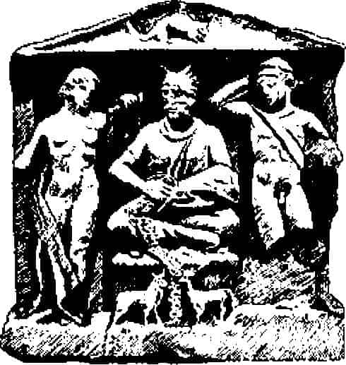

Kırk yıl önce Miguel Asin y Palacios, Katolik papaz ve Madrid Üniversitesinin Arapça profesörü, Avrupa bilim dünyasını, Dante’nin İlahî Komedya’sının Müslüman kökeni bulunduğunu göstererek şok etmişti.{373} Muhammed’in araf, cehennem ve cennete yaptığı gece ziyaretine ait efsane edebiyatını özetleyerek ilişkiyi ortaya koymaya yetecek koşutlukları gösteriyordu. Ayrıca, Zerdüşt, İran edebiyatına ve bunun ötesinde Mısır Ölüler Kitabı’nda ruhun Osiris önünde yargılanmasına da atıfta bulunmaktaydı. Şu andaki konumuz için özel önem taşıyan tarafı da, Dante’de bulunan en alt bölümde soğukla işkence yapılması düşüncesinin İranlı geçmişinden söz etmesidir. Peder Asin, “Kitabı Mukaddes eskatologyasında{374} cehennemde soğuk işkencesi bulunduğuna dair bir atıf bulunmadığını söylemeye gerek yok. İslam öğretisi ise bu işkenceyi ateşle aynı görür... İslam dünyasına girişi... Zerdüşt inancının İslam tarafından özümlenmesinden kaynaklanmaktadır... Zerdüştlük’ten Müslümanlığa dönenler tarafından İslam’a sokulmuş olması muhtemeldir” demektedir. “Soğukla işkence” diye eklemektedir, “Buddhist cehenneminde de görülür.”{375} Ve görmüş olduğumuz gibi, Caynacılarda da var.
Batı’nın ve Doğu’nun, aralarında dünya dağının bulunduğu katmanlı cennet ve cehennem inançlarının nihai kökeni, Mezopotamya’nın evrenin yapısı hakkındaki inanışıdır. Görmüş olduğumuz gibi, yanları yönleri gösteren ziggurat, kozmik dağı temsil etmektedir; tepesinde, en üst katı olan cennette en büyük tanrı An oturmaktadır ve arada birçok parlak ilah vardır. Doğum Ağacı ve Ölümsüzlük Ekmek ve Suyu bu yüksek çemberdedir; aşağıda, uzayın ortalarında kraliyet yönetiminin kutsal arketipi ve efendisi vardır. Kralın rolü, uzun Mezopotamya tarihindeki birçok imparatorluğun yarattığı düzensizlik içinde birçoğu tarafından oynanmıştır: Önce Enlil (Sümerli Nippur’un ana ilahı), sonra Bel Marduk (Hammurabi’nin Babil’inden), Assur (Asurlulardan) ve başka birçoğu arasında Yehova (ilk İbranilerin). Birçok parlayan tanrıyla (veya melek) dolu maiyetinde her yıl Kader Levhaları kaleme alınırdı. Ve aşağıda gezegenlerin yedi cenneti dönüyordu; Asurlular döneminde (MÖ y. 1100-630) bunlar zigguratın teraslı yedi katıyla temsil edilirdi. Ve yer altında, cehennemde, korkunç tanrıça Ereşkigal’in Dönüşü Olmayan Ülkesi’ne, yedi kapıdan girilirdi. Arallu denilen karanlıklar ülkesinde canavarlar sürüsü ve ölümlerinde son gömülme ritüellerinden yoksun kalmış talihsiz ruhlar çirkin kuşlar biçiminde dolanıp dururlardı.{376}
Böylece uygarlığın en eski merkezlerinin, Mezopotamya ırmaklarının vadilerinde kurulan kentlerin MÖ y. 3500-2000 yılında gelişip hiyeratik şehir devleti düzenini kuran kültürün ikonografisinin hem Doğu’nun hem Batı’nın evrene ilişkin mitolojilerinin ortak kaynağı olduğu görülmektedir. Fakat zaman içinde farklı süreçler iki ayrı gelişimin doğup birbirinden ayrı biçimlenmesini getirmiştir. Batı’da, bireysel yaşamın onuru üstünde durmamızı destekler biçimde -her ruh için tek doğum, tek ölüm, tek kader, kişiliğin tek olgunlaşması- arafta, cennette, cehennemde olsun, ziyaretçi, geçmişlerini tanır. Muhammed cennette, aynı Dante’nin gezisi sırasında kurtulanlar ve felakete uğrayanlarla konuştuğu gibi, cesur ve sadık arkadaşlarıyla konuşmuştur.
Klasik Yunan ve Romalılar da yeraltı dünyasına seyahat ederler: Hem Odysseus hem Aeneas eski arkadaşlarıyla görüşmüşlerdir. Oysa Doğu’da kişiliğin bu tür devamı yoktur. Odak noktası birey değil cevher, yeniden yaşama dönen jiva’dır, hiçbir birey doğuştan bu cevherin sahibi değildir, dalgalar arasındaki gemi gibi cevher bir kişiden ötekine geçer. Bir kurt olur, bir tanrı, bir cin olur bir kral veya terzi.
Heinrich Zimmer’in belirttiği gibi, Doğu’nun cennet ve cehennemlerinde birçok varlığın neşe veya acı içinde olduğunu görmemize karşın, hiçbiri dünyevi kişiliklerinin izlerini taşımazlar. Bazıları bir zamanlar başka yerde olduğunu anımsayabilir ve o andaki cezanın niçin verilmiş olduğunu bilebilir; gene de, genel olarak hepsi o andaki durumlarıyla sınırlıdırlar ve o durumlarının içinde yitmişlerdir. Bir köpeğin mevcut yaşamının ayrıntılarıyla büyülenip nasıl bir köpek olduysa onunla yetinmesi gibi -bizler de genel olarak kişisel varoluşumuzla büyüleniriz- Hindu, Caynacı ve Buddhistlerin öteki dünyalarındaki varlıklar da öyledir. Eski durumlarını, biçimlerini anımsayamazlar, o anda oldukları halle kendilerini tanımlarlar. Ve bu hal, elbette, Hint bakış açısına göre gerçekte olmadıkları haldir.{377}
Tipik Batılı kahraman bireyken, dolayısıyla zamanın acı ve gizemiyle ciddi biçimde, ister istemez trajik biçimde uğraşırken, Doğu’nun kahramanı cevherdir. Özünde kişilik yoktur, ölümlü dünyanın hayali uğraşlarıyla dokunulmamış veya bunlardan başarılı biçimde kaçmış, sonsuzluğa ait görüntüdür. Ve Batı’da kişiliğin kaynağının Tanrı’nın bile kişileştirilmesi kavram ve deneyimiyle yansıtılmış olduğu gibi, Doğu’da da tam bir zıtlıkla, mutlak olarak kişilik dışı yasanın gücüne ilişkin duygu, her şeyin bireysel yaşamın yalın bir kaza lekesine indirgenmesiyle kaynaşmıştır ve her şeyi bu uyum içine almıştır.
İki dünyanın tarihteki ayrılma noktalarına ilişkin bulanık, fakat tam anlamıyla çözülmemiş sorun, İranlı Zerdüşt kişiliğinin gelişimini içerir. Zerdüşt'ün mitolojisi ilerlemeci, ahlaki, katı biçimde düalistiktir. Ruh açısından kültürel havzanın tamamen Batı yakasındayken, köken olarak en azından bir bölümünün Vedalarla aynı mitolojiden geldiği ortadadır. Batı Mitolojisi cildinde bu konuya yer ayrılmıştır. Hindistan’la ilişkisi ve İran düşüncesinin Buddhizm ve Hinduizme etkileri açısından, Zerdüştlük öğretisinin ve bu arada Batı’nın ayrıştığı ana konulara ve zıtlıklara biraz değinmek zorunludur.
Yeniliklerin ilki ve en köktencisi -bildiğim kadarıyla mitoloji tarihinde ilk burada görülür- dünya devri daiminin gerileyici değil ilerlemeci olmasıdır. Daha önce belirtilmiş olduğu gibi{378} Zerdüşt dünya görüşüne göre yaratılış kötücül ilkenin sızdığı saf ışıktan bir tanrının işidir. Kötü ilke, doğası gereği birincinin tersidir ve ondan bağımsızdır. Dolayısıyla, aralarında kozmik bir savaş gelişir. Fakat bu savaş sonsuza kadar sürmeyecektir. Işığın zaferiyle sona erecektir. Süreç dünyada Doğruluk Krallığı’nın mükemmel biçimde kurulmasıyla sona erecektir ve devri daim duracaktır. Burada sonsuz dönüş düşüncesi yoktur.
Bu mitolojiyi, özellikle Hindistan’dan farklı kılan ikinci köktenci yenilik, kişisel seçime yüklediği sorumluluktur. Kişi, düşünce, söz ve işinde nasıl Işığın yanında yer alacağını veya yer alıp almayacağını seçmekte serbesttir.
“O zaman kulaklarınla duy. Daha İyi Aklın gözlerindeki parlak alevlerle gör. Bu teker teker herkesin kendisi için din konusunda vereceği karardır. Dava için büyük çaba başlamadan önce uyan, öğretimizi duy.”{379}
Ve son olarak, Zerdüştçü dünya görüşü açısından çok önemli, onu Hindistan’dan ayırmayan, fakat doğrudan karşısına yerleştiren üçüncü ilke, nihai amaca giden yolun katılmamak değil katılmak olmasıdır. Birey, kendi kişisel iradesiyle, Daha İyi için düşünmeyi, konuşmayı ve davranmayı yükümlenmiştir; bütün gayretiyle kendini ormandaki değil köyündeki işine verir. Dünya davası hiç de umutsuz değildir. Ve daha sonraki Zerdüşt ikonografisinde dünyadaki kötülüğü, ahlaki düzenin karanlık çelişkisini özetleyen biçimin, tiran kral Azhi Dahaka’nın Cayna sanatındaki Efendi Parşva’nınkiler gibi, omuzlardan çıkan iki yılan olması bana çok ilginç gelmektedir. Bunun rastlantı olduğunu sanmıyorum. Çünkü Caynacılık gibi, Zerdüştlük de mutlak düalizm dinidir, uzlaşmacı tarafı yoktur. Bu zıt sistemlerin ikisinde de İyi ve Kötü’nün (Zerdüşlük’te) jiva ve jiva olmayanın (Caynacılıkta) üstü kapalı biçimde “İki Ortağın Gizi” anlamında dramlarının oynandığı dünya sahnesinin arkasında uzlaşmacılık yoktur. İki din zıt ikizlerdir: İkisi için de öteki mükemmel biçimde Aldatıcı’nın temsilcisidir. Hint sisteminde kurtuluşun tek yolu cevherin dünyanın boşuna dönüşlerinden kendini sıyırmaktır. İran dini için kurtuluş, insan ve Tanrı’nın dünyadaki haklılık için hiç de boşuna olmayan mücadelesine katılmaktır. Zerdüşt yazınında, gerçekten, biraz önce gözden geçirmiş olduğumuz Caynacılık türü felsefelere açıkça, doğrudan ve bilerek yapılmış saldırı olduğunu görüyoruz:
“Sana gerçekten söylüyorum ki [Işığın efendisi Ahura Mazda, peygamberi Zerdüşt’e bildirdi] karısı olan insan, oğlu olmayandan üstündür; evi olan olmayandan üstündür; çocukları olan çocuğu olmayandan üstündür; zenginlik sahibi olan olmayandan üstündür; Ve iki adamdan, kendini etle dolduran, et yemeyenden çok daha iyi ruh durumu kazanır; ikincisi, ancak bir ölüdür; ilki ondan bir dirhem değeri, bir koyun değeri, bir öküz değeri, bir insan değeri üstündür. Kemik Bölücü Ölüm, Kendiliğinden Hareketli Ok Ölümün saldırılarına karşı mücadele edebilecek olan odur. Üstünde en ince elbisesi varken, kış ifritine karşı mücadele edebilir; kötü tirana karşı mücadele edebilir ve başını ezebilir; tanrısız aldatıcı ve et yemeyen aldanana karşı mücadele edebilecek olan bu adamdır.”{380}
Zerdüşt’ün yaşadığı zaman, dediğimiz gibi, bilinmiyor. Profesör James Darmestetter’in daha 1880’de sorduğu “Zerdüşt tanrı olmuş insan mı, insan olmuş tanrı mıydı?” sorusu bile yanıtlanmamış dununda.{381} Kesin olarak bilinebilen, MÖ 521-486 yılları arasında hüküm sürmüş olan I. Dara’nın, Mahavira’nın (ölümü MÖ y. 485), Buddha’nın (MÖ 563-483), Aiskhylos’un (MÖ 525-456) ve Konfüçyus’un (MÖ 551-478) çağdaşı olduğu ve MÖ 520 yılında, Behistun’da, üç dilli, Persçe, Elamca ve Akadça, çiviyazısıyla kendisinin Zerdüşt’e inandığını yazdırdığıdır: “Ahura Mazda’nın rahmetiyle kral oldum.”
Onun zamanında Pers İmparatorluğu İyon adalarından (I. satraplık) Pencap ve İndus’a (XX. satraplık) uzanıyordu. Mısır, Mezopotamya, Fenike ve Asya Yunanlıları ve İndus Vadisi, eski dünyanın bütün uygarlıkları, ilerlemeci ve mücadeleci, çok uluslu tek bir ülkeye bağlanmıştı: Dünya tarihinde ilk kez. Acıya Perslilerin verdikleri yanıt, dolayısıyla -Aiskhylos’un trajedisi, Mahavira’nın zahitliği ve Konfüçyus’un sağ görüsüyle çağdaş yanıt- Tanrı egemenliğinde mantıkla idare edilen, ilerlemeci bir dünya imparatorluğu kurmaktı. Hindistan’dan Yunanistan’a canlı bir ticaret ve yoğun yollar işliyordu. Genel hoşgörü anlayışı, Kudüs’te Kaldelilerin yıktığı tapınağın yeniden inşa edilmesine olanak sağladı. Birçok yıkıma uğramış halkın tanrıları yeniden can buldu. Sanat gelişti. Tüm ülkede yeni kentler ve saraylar kuruldu. Ve bir zaman için sanki Evrensel Monark, İranlı şahlar şahının kişiliğinde gerçekten vücut buldu.
Kapalı arabalarıyla MÖ 2. binde Hindistan’ı altüst eden savaşçı Aryan sürüleri, Yunanistan’ı arkeoloji çabalarının gösterdiği gibi MÖ y. 1900’den 1100’e kadar yağmalayan sayısız, büyük küçük avcı ve hayvancı gruplarına benzetilebilir. Güney Yunanistan’da ve Girit’te izlerini bırakan bu gruplarla ilgili olarak H. G. L. Hammond şunları yazar: “Bazı olumsuz sonuçlar çıkarmak olanağı vardır. İşgalciler belirgin çömlek boyama tekniği veya gelişmiş bir uygarlığa ait herhangi bir iz getirmediler. Kent yaşamı kurmadılar. Anlaşılan başlangıçta göçebeydiler, çadır ve kulübelerde yaşıyorlardı, ahşap kap kacak kullanıyorlardı ve ahşap heykellere tapıyorlardı. İlk köyleri küçüktü. Miken uygarlığının standartlarına saygı duymadılar; demek ki, olasılıkla Miken sınırlarının ulaştığı alanın dışından geldiler. Miken iktidarının merkezlerini alaşağı edebildiklerine göre, fiziksel olarak güçlü ve iyi yönetiliyor olmalıydılar. Bazı üstün silahları olabilir, fakat sanat yönünden istila ettiklerinden daha aşağıydılar.”{382}
Kuşkusuz aynı tanımlama Harappa ve Mohenjodaro’nun ileri Tunç Çağı uygarlıklarının harabeye döndüğü zamanda İndus Vadisi’ne giren kabileler için de kullanılabilir. Fakat Egeli işgalciler halen gücünü koruyan arkaik imparatorlukların dünyasına girerken, Hindistan’dakiler bir tür kolonyal yerleşmenin zaten çökmekte olan iki kentine rastladılar ve önlerinde görece daha kaba orman bitkicileri, avcıları ve toplayıcıları vardı; küçümseyerek “Dasyu” dedikleri insanlar. Ayrıca, MÖ 1200’e gelindiğinde Yunanlılar demir kullanmaya başlamışlardı; Hint Aryanları kullanmıyorlardı. Ve son olarak Akdeniz’in gemi dolu hoş, açık suları Yunanlıları uzak ülkeleri keşfetmeleri ve gözlerini açık tutmaları için destekliyordu, oysa Asya’nın koca toprakları ve dağları insan tarafından aşılamazdı ve insan hayalini zorlayan ufak zaferleri daima tehditle karşılıyordu. Evrenin güzelliğinden çok yüceliğini akla getirten bir doğa söz konusuydu. Ve Avrupa’nın eski mirastan devraldıkları tanrıları ve mitosları -insanın kendini evinde gibi rahat hissettiği dünyanın verdiği güvenle- gittikçe insan biçimli olmaya başladılar. Hindistan’da huşu, korku ve güç duygusuyla insanüstülük ve aşkın yücelik düşüncesi insan yüreğinde bile insancıllığın eridiği bir noktaya geldi ve Tanrı’nın insanlıktan uzaklığına varıldı.
Hiyeratik şehir devletlerinin dünyası, artık anılarda kalmıştı ve çoğunlukla çok bulanıktı. Fakat birçok kentin yıkılmış olmasına karşın, birçoğu da ayakta kalabilmişti; yani Batı’da. Hindistan’da ayakta kalmış kent yoktu. Dolayısıyla, Yunanlılar çok geçmeden geçmişin harabeleri üstüne yeni inşaatlar kurmaya başladılar; tuğla, alçı, taş yükselmeye başladı. Pencap ve Ganj ovalarının Vedacı Aryanlarıysa bize fiziki bir kalıntı bırakmaya dayanacak kadar sağlam malzeme kullanmıyorlardı. Dönemleri MÖ y. 800’e kadar arkeolojik boşluktur. Yaşam biçimlerine ait edebi bir anahtar da bırakmamışlardır. İlyada ve Odysseia’dan, birçok arkeolojik desteğin yanında Yunan kahramanlık çağına dair oldukça güvenilir bir resim çıkarmak olanaklıdır. Hint epiklerindense -gördüğümüz gibi MS beşinci yüzyıla kadar varan izler ve değiştirmeler göstermektedir- Veda çağının dünyasına ve insanlarına dair, ancak hayal gibi büyük oranda ülküsellleştirilmiş, rahip elinden çıkma bir görüntü elde edilebilmektedir. Ev halkı, ritüeller ve kendileri için İndra’nın ejderhayı kestiği ve yedi ırmağı kurtardığı insanların savaş aletlerini duymak yerine, ancak “esmer Dasa halkına boyun eğdirdiğini ve renklerini yok ettiğini”{383} duyuyoruz; elimizde başka bir şey yok.
Vedacı Aryanların hemen peşinden gelen dönem içinse, on yıl kadar önce Ganj’ın yukarı bölümünde çok şeyler vaat edici arkeolojik bir keşif yapıldı. Delhi’nin 80 mil kadar kuzeydoğusunda, Hastinapura’da, güzel duvarlarla teraslanmış bir höyük bulundu. Burada peşpeşe üç ayrı seramik eşya dönemi ortaya çıkmıştır;
1. Aşıboyası renkliler, MÖ y. 1000 yılına ait, bakır işçiliğiyle yan yana. Sir Mortimer Wheeler’e göre, “Şu an için yarattıkları
etki... Bölgede kent yaşamının tam olarak gelişiminden öncesine ait olduklarını düşündürtüyor.”{384}
2. Gri boyalılar, Wheeler tarafından MÖ sekizinci-beşinci yüzyıl arasına yerleştiriliyorlar, “iki ırmak” (doab) Cumna-Ganj bölgesinde yoğunlaşmış kendine özgü Tunç Çağı çömlekleri. Batıya Pencap’a ve güneye Ujjain’e kadar uzanır. Tekerlekle yapılmış ve iyi pişirilmiş, çizgi ve noktalarla, iç içe geçmiş daireler, sarmallar, s’eler ve svastikalarla süslenmiş, çoğunlukla siyah, bazen kırmızı boyanmışlardır. Wheeler’e göre, “Eğer Aryanlar bu tablo içine yerleştirilecekse, bu çömleklerin işgallerinin ikinci aşamasını temsil ettiğini düşünmek mümkündür. İndus Vadisi ve Beluci sınırında görgülerini artırıp kuşkusuz bazı sanatlar öğrendikten sonra Pencap’tan Ortabölge’ye girdiler ve Ganj-Cumna doabını aryanlaştırdılar.”{385}
Bu dönem Brahmanların, ana Upanişadların, Ajataşatru ve Jaibali adlı kralların ve olasılıkla yankıları Mahabharata’da bize ulaşan büyük savaşın yıllarıydı. İngiltere tarihindeki Güller Savaşı gibi, aristokrat feodal dönemin sonunu bildiren bir savaştır bu. Felaketin ardından, vira “kahraman” terimi bir daha araba savaşçıları için kullanılmadı, fakat yogileri anlatmaya başladı. Örnek olarak Caynacıların son Dünya Kurtarıcısı Mahavira’dır, büyük (maha) kahraman (vira).
3. Kuzeyli siyah cilalı çömlekler, tekerlekte yapılmış, çelik gibi cilalanmış, üstün işçilik gösteren, demir işçiliğiyle yan yana nitelikli çömlekler. Şematik olarak, öneri niteliğinde MÖ beşinci ve ikinci yüzyıl arasına yerleştiriliyor; Buddha’dan (MÖ 563-483) İmparator Aşoka (h. MÖ y. 268-232) dönemine kadar. Öncelikle Buddha’nın ilk öğretilerinin yayılmış bulunduğu Bihar’da yaygınlar; sonra Aşoka’nın zaferleriyle ve hemen peşinden gelenlerce batıya yukarı Pencap’a (Taxila), doğuya Bengal ve Oriss’aya ve güneye Amaravati ve Nasik’e kadar uzanmışlar.
Hindistan’da kentlerin gelişimi, ancak bu son iki çömlek türüyle birlikle varsayılabiliyor: Tuğla veya taştan değil, ahşaptan kurulmuş kentler; çok iri kiriş ve hatıllar. Gri boyalı çömleklerle ilgili olarak (Wheeler’in önerisine göre) “Cumna-Ganj havzasında MÖ 1. bin yıla kadar uzanan gelişkin ve örgütlü kent yaşamı bulunduğunu” varsayabiliriz, “... Mahabharata’da görülen kent yaşamını... : sınırsız ve verimli toprakla kullanılabilir su ulaşımı üstüne kurulu zengin ve kıskanç bir hanedanlar ve siyasetler dünyası.”{386} Ve sonra, MÖ 500’lerde -kuzeyli siyah cilalı çömleklerle birlikte- “bölgede demir kullanımı bilgisi yaygınlaşıyor; kuşkusuz demir eritmenin beş, altı yüz yıldır bilindiği İran’dan gelmiş olmalı... Gene İran’dan gelen para kullanımı, ticaretin geliştiğini ortaya koyuyor.” Ve Wheeler’in da vardığı sonuca göre kuzeyli siyah cilalı çömleklerin bize gösterdiği bu Ganj uygarlığı geliştiğinde, “çağdaş dünyamızın da tamamen sarsamadığı yüzyıllardır değişmeyen bir yapı” kurulmuş oluyor.{387}
Pers imparatorluğunun öteki ucundaki Yunanistan’a bir daha göz atarak, Atina’dan Bengal’e kadar MÖ 800-500 yılları arasında birçok laik (hiyeratik değil) monarşik devletin kurulduğunu söyleyebiliriz. Sözcüğün gerçek anlamıyla yüzlerce küçük iktidar. Her birinin soylu bir aile tarafından yönetilen, yaşlılardan oluşan kurulları, yurttaşlar meclisi, saray ordusu, tapınağın ruhban sınıfı, köylülüğü, tüccarı, dükkânları, mahalleleriyle, -zenginlerinde- anıtları ve parklarıyla kent veya kasaba bir başkent var. Ve bu şirin küçük başkentlerde gezgin öğretmen bilgeler görünmeye başlıyor. Her birinin çevresinde inanmış öğrencileri var ve hepsi -ilk kez ve sonsuza kadar- acı gizemini çözdüğüne inanıyor: Kapila (belki MÖ 600), Gosala (MÖ 535’ler), Mahavira (ölümü MÖ y. 485), Buddha (MÖ 563-483), Pithagoras (MÖ y. 582-500), Ksenophanes ve Parmenides (gene altıncı yüzyıl) ve Empedokles (MÖ y. 500-430), “insanlar arasında ölümsüz tanrı gibi dolaşan, kurdele ve çelenkler takmış mucize yaratıcısı”. Bunların ardında daha gölgede kalan hayali kişiler var; insan mı tanrı mı olduklarını söylemek güç: Parşva (872-772?) ve Rişabha, Orfeus (tarih bilinmiyor) ve Dionysos. Dahası, bu bilgelerin öğretilerinde, Hindistan’da da, Yunanistan’da da, eski Aryanların mitoslarında görünmeyen birkaç karakteristik tema ortaya çıkıyor. Örnek olarak: Orfizmde ve Hindistan’da temel olan doğum çemberi düşüncesi; gövdede hapis olan ruh düşüncesi (Orfikler “gövde mezardır” diyorlardı) ve zahitlikle serbest bırakılması; günahın cehennem cezasına yol açması ve erdemin vecd, böylece mutlak bilgi ve kurtuluş getirmesi. Heraklitos (MÖ 500’ler), Buddha’nın (aynı dönem) Ateş Vaazı’nda söylediği gibi, yaşamın hiç sönmeyen ateş olduğunu söylüyordu. Temel öğe öğretisi iki gelenekte de ortaktır: Yunanlılar için ateş, hava, toprak ve su, Hintliler için ether, hava, ateş, su ve toprak. Orfikler, Hintliler gibi, kozmik yumurta imgesini biliyorlar, ayrıca kozmik danstan da haberdarlar. Thales’in açıklamalarına göre (MÖ y. 640-546) evrenin sahibi bir ruh var ve evren canlarla dolu. Ve Platon’un Timaeus’unda evrenin yapısı Caynacıların tanımına çok benziyor: “Bütün yaşayan yaratıkların, çeşitleriyle ve aileleriyle parçası oldukları Yaşayan Yaratık.”{388}
İlkel avcılar arasında tekil ruhun ölmediği düşüncesinin bulunduğuna işaret etmiştik. Bu ruh ölmez ve doğmaz, yalnızca tülden geçermiş gibi bir gövdeden ötekine geçer. Gene, eski Yakındoğu’da yaşamın her aşamasında kozmik düzeni model edinen hiyeratik kent devletini gözlemledik. Bu düzenin matematik uyumu göksel dairelerle ortaya çıkıp gösteriliyor. Ve MÖ y. 1750’de, dönemin iki önde gelen merkezi olan Mezopotamya ve Mısır’da feryat, kuşku ve sorgulama yazını doğmuş olduğunu da biliyoruz.
Karışıklıklarla dolu bir bin yıl gelmişti. Eski, kırsal kesime dayanan Tunç Çağı, gelişen birçok uygarlığın bulunduğu geniş bir alanda, kutsal değil laik krallar tarafından yönetilen kentler galaksisinin oluşumunu doğurmuştu. Ve artık halkın tamamı çiftçi değildi. Tüccarlar, profesyonel hırsızlar, tefeciler, her türden sanatkârlar, hâkim ve kâtipler sınıfı, denizciler, kervancılar, hancılar, madenciler ve subaylardan söz ediliyor. Bu kişiler için verimli toprağın kırsal dininden gelen eski ritüeller veya krallara yaraşır zaferlerin büyüleri gücünü yitirmişti, bunların devri geçmişti. İnsanın iyiliği sorununa yeni bir yaklaşım için geniş bir alan hazır durumdaydı. Topraktan ve avın eski zorunluluklarından kurtulmuş çok daha incelmiş anlayışa sahip yeni bir nüfus ortaya çıkmıştı. Belirli derecede lükse, boş zamana ve sonuç olarak nevroza sahiptiler. Kaçınılmaz olarak yenilik savunucuları ortaya çıktı; yeni deneyimlerle yeni kaygıları vardı. Tarihin ilk sistematik ve birçok açıdan belki de en iyi psikologları yetişti. Ve temel araçları her yerde aynıydı; Hiyeratik geçmişten kalmış, mikrokozmoz ve makrokozmozu birleştiren gizli bir uyum ve eşdeğerlilik kavramı, sonuç olarak büyüsel etkilere açık eski ritüel söylem. Fakat artık başat sorun büyüsel değil (hava durumu, hasat, ürün bolluğu ve uzun yıllar) psikolojikti (ruhun uzlaşması ve uyumu), toplumsaldı (dinsel gelenek yerine laik temellere göre kurulmuş yeni toplumla bireyin bütünleşmesi). Dolayısıyla, mükemmel bir mitoloji doğuran bölge yaratılmış oldu: “Sınırlı da olsa yeterli bir alanda, yakın bağları olan bireylerin oluşturduğu geniş toplulukta [son dönem Tunç Çağı ve ilk dönem Demir Çağı toplumlarını barındıran geniş alanda olduğu gibi] aynı anda kabaca benzer etkiler altında kaldığı [kentsel yerleşimin yaratmış olduğu gibi] ve sonuç olarak benzer psikolojik ‘kapılma’ların yaşandığı ve ritüelleşmiş süreçler ve ilgili mitosların doğduğu” bir yer.{389}
Böyle etkilenmeye açık bir alanda düşünceler ve uygulamalar birden çok yerde aynı anda kendiliğinden doğabilir ve saman alevi gibi yayılabilir.
Dr. Kerenyi MÖ altıncı yüzyılda Yunanistan’da a la mode olan Orfik ruhsal topluluk ritleri hakkında yazarken, “kabile bağları taşıyan yaygın ritlerin eski dünyasından kopan insanlar sanatlarını yeni çağın dinsel gereksinimlerine göre uyarladılar. Bu tarihsel süreçte topluluklara katılmanın anlamı ve niteliği değişti. Daha düşük yalın bir ritüellik kazanırken, daha gelişkin saf biçimiyle psikolojik bir yön kazandılar ve filozoflar -ilk kez Pithagoras, sonra ötekiler ve Empodekles’in törensel uygulamalarına da başvurmadan- mürşitliğe başladılar” der.{390}
Hindistan’da da aynısı geçerliydi: Aryan öncesi kentlerin eski ritleri zahitliğin temel yeniden doğum ve ölüm temalarını, psikolojik kopma ve mitsel özdeşleşmeyi besliyorlardı. Tam anlamıyla koşut bir gelişmeyle yeni öğretiler doğdu ve belki de -belki de değil- İran yoluyla birbirini etkiledi. Bu döneme ait elimizdeki çok az kanıtın ışığında söyleyebileceğimiz şu ki, hem Hindistan’da hem Yunanistan’da, aralarındaki İran da dahil, eski düalistik mitolojik felsefenin temel motifleri, neredeyse aynı anda ansızın yeni biçimler aldı ve bunlar hemen yayıldı.
Buddha olarak tanınan insanın karakterini, yaşamını ve gerçek öğretisini yeniden ortaya koymak olanaksız. MÖ y. 536-483 arasında yaşadığı varsayılıyor. Fakat Pali Canon tarafından yazılan ilk yaşamöyküsü, ancak MÖ y. 80’de Seylan’da kaleme alınmıştır.
Gerçek tarihsel sahneden beş yüzyıl sonra ve 1.500 mil uzakta. Ve yaşamı çoktan MÖ y. 500’le MS y. 500 arasında görülen Dünya Kurtarıcısı modelinde, Hindistan’da Caynacılarda veya Yakındoğu’da İsa düşüncesinde görüldüğü tarzda mitoloji olmuştu.
Şematik olarak özetlenirse, Dünya Kurtarıcısı arketipi şunları içerir:
1. Kral ailesi soyundan gelme
2. Mucizevi doğum
3. Doğaüstü görüngüler arasında
4. Yaşlı kutsal bir adam (Simeon: Asita), doğumdan kısa süre sonra, dünyayı kurtaracak mesajı verir ve
5. Çocukluğunda yaptıkları kutsal kişiliğini ortaya koyar.
Hint dünyasında dünya kahramanı, bunlardan sonra;
6. Evlenir ve mirasçısı doğar
7. Gerçek görevinin farkına varır
8. Büyüklerinin rızasıyla (Cayna anlatımı) veya gizlice (Buddha) evinden ayrılır
9. Zahmetli orman öğrencilerine katılır
10. Doğaüstü düşmanlarla karşılaşır, sonunda
11. Zafere kavuşulur.
Adı son anılan Düşmanlar, Veda günlerinde toplumdışı ejderha (Vritra) olarak görünen kişiliktir. Fakat yeni psikolojik anlayışla uyum içinde bu Dünya Kurtarıcısı’nın aydınlanmak üzere kendi derinliklerine dalması, hem kendisinin hem dünyanın kurtuluşu için mücadele ettiği zihinsel yanlışlıklar olarak tanımlanmıştır.
Hıristiyan efsanesinde gençlik yıllarına ait olan 6.-8. aşamalar kaydedilmemiştir. 9.-11. aşamalar ise çölde geçirilen kırk gün ve şeytanla karşılaşmayla tamamlanmıştır. Kral Herod’un masumları katletmesi, Aziz Yahya’nın uyarısı ve Kutsal Aile’nin Mısır’a kaçışına ait bebeklik sahnelerinin simgesel olarak 6. aşamaya, geleceğin Buddha’sının soylu babasının onu misyonundan vazgeçirmek için saraya kapatarak evlendirmesine karşılık geldiği söylenebilir. Yaşlı bir adamın, hastanın, cesedin ve yoginin görünmesiyle 7.’de görevinin bilincine ermiş, 8.’de kaçmayı becermiştir. İki öyküde de geleceğin Kurtarıcısı olacak bebekle, önceden çizilmiş kaderini engellemek için bütün gücüyle -ister kindar biçimde olsun (Kral Herod) ister iyi niyetle (Kral Suddhodana)- uğraşan kral soylu bir düşman anlatılmaktadır. Fakat başarıya ulaşamayacaklardır.
Rakibiyle yüz yüze karşılaşıp onu alt eden Dünya Kurtarıcısı
12. Mucizeler gösterir (su üstünde yürüme, vb.)
13. Gezgin öğretmen olur
14. Kurtuluş öğretisi vaaz eder
15. Bir grup öğrencisine ve
16. Daha dar seçkin çıraklar çevresine
17. Bunlardan biri, ötekilerden öğrenme konusunda daha yavaş olanına (Petros: Ananda){391} görev verilir ve o yetişecek topluluğun modeli olur, bu sırada
18. Bir başkası, karanlık ve hilekâr olanı (Judas: Devadatta) Usta’nın ölümünü aklına koymuştur.
Efsanenin çeşitli anlatımlarında ortak motiflere farklı öğretilerle uyum göstermesi için farklı anlamlar yüklenmiştir. Örnek olarak, 2: Bakire Meryem Ruhül Kudüs’ten gebe kalırken, Kraliçe Maya, Buddha’nın annesi, kocasına gerçek bir eş olmaktadır; doğurduğu çocuk da evrenin Yaratıcısı, Tanrı’nın vücut bulması değil, sayısız yaşamların sonuncusuna ermiş olan yeniden doğan jivadır. Aynı biçimde 10.-11. aşamalarda: Buddha’nın yaşamı Mara karşısında zafer kazandığı Bodhi ağacının altında sona ererken, Hıristiyan efsanesi Kurtuluş Ağacı’nı 19. aşamaya taşır; Kurtarıcının ölümü. Buddha’nın yaşamında bu öğretmen olarak geçen uzun bir ömrün sonunda huzur içinde bir geçiştir. Çünkü Buddhizmin ana fikri -daha önceki Soma kurbanının tersine- Kurtarıcının fiziksel yok edilmesi değildir; Gerçekler Gerçeği’nin ne olduğuna uyanmak (bodhi) ve hayalden (maya) kurtulmaktır (mokşa). Ve Buddhist birey için ana fikir, sonuç olarak, Buddha efsanesinin tarihsel olarak MÖ y. 563-483’te ne olduğu değil, kendini aydınlanmaya kavuşturup kavuşturmadığıdır.
Dolayısıyla gerçeklikle uyumlu olması kaygısı taşınmadan şöyle anlatılmaktadır:
Bir zamanlar Suddhodana adlı iyi bir kral varmış. Bu kral Kapilavastu kentinde hüküm süren Güneş Hanedanı’ndanmış. Bilge Kapila bir zamanlar burada öğretmenlik yapmış (efsanevi olay).
Güneş Hanedanı, okuyucunun bildiği gibi, yalın ışık ilkesi yerine geçmektedir. Güneş ışığı saftır. Ay ışığı ise, karanlık içerir. Dolayısıyla, güneş ışığı ölümsüzdür; oysa ay ışığı kendi karanlığı nedeniyle doğup kaybolur; bir ölümlü, bir ölümsüzdür. Tammuz ve Osiris tanrılarıyla, Veda sisteminde Soma, ay gizeminin ifadesiydiler. Ve tanrı Şiva da, görmüş olduğumuz gibi, bu bağlamda yer alan bir ilahtı. Hayvanı boğadır; saçında hilal vardır; bu ikonografiyi İndus mühürlerindeki yogiyle ilişkilendirmiştik. Buddha mitolojisi ise, öte yandan, güneşle ilgilidir. Buddha Şakya Klanı’nın Aslanı olarak adlandırılır, Aslan Tahtı’nda oturur. Öğretisinin simgesi Güneş Tekerleği’dir ve öğretisi halin hal olmadığı, uygun imgenin ancak ışık olduğu bir hale atıftır.
Mısır’da, MÖ y. 2480’de V. Hanedan’ın yükselmesiyle güneş mitolojisi Osiris’in ay mitolojisine baskın çıkmıştı ve ay rolündeki firavun güneş tanrısı Re’nin oğlu olarak adlandırılmıştı. Boğa ayaklı tahtlar ve tahtırevanlar aslan ayaklılarla değiştirilmişti, Samiler arasında güneş tanrısı Şamaş (Sümerlerin Utu’su) çok güçlü bir ilahtır ve Aryanlarda güneş her yerde büyük bir güç olarak kabul edilmiştir. Pers şahlar şahının parıltılar içindeki kenti Persepolis’te -1. Dara tarafından MÖ 522’de yaptırılmış ve MÖ 330’da İskender tarafından yıkılmıştır-. Aryan peygamber Zerdüşt’ün güneş ilkesi Işık Efendi Güneş’in Dünya'yı aydınlatması gibi parlamış ve ışınımlarını göndermişti. Ve şimdi, Buddha’nın babasının, iyi kralın, bir zamanlar bilge Kapila’nın öğretmenlik yaptığı kentin hükümdarının Güneş Hanedanı’ndan olduğunu okuyoruz.
Kapila, Buddha’nın ayrıldığı Sankhya adı verilen felsefenin kurucusuydu. Caynacılık ve Buddhizm gibi, Sankhya Vedacı değildi ve Caynacılık gibi, fakat Buddhizm’in tersine, iki zıt ilke tanımaktaydı: 1. prakrti adı verilen madde ve 2. puruşa adı verilen cevher, “kişi”. Fakat Caynacılıkta cevher madde tarafından fiziksel olarak bulaştırılıp kirletilmiş kabul edilirken, Sankhya’da gerçek temas yoktur. Kişi, güneş gibi, uzakta durur. Işınımı maddenin hareketsiz ilkesini harekete geçirir ve madde güneş ışığının parıldattığı su gibi olur. Ve her parıltı kendinin kişi olduğunu, dolayısıyla sonsuz olduğunu sanır; böylece, acı ve bütün öteki duygularla birlikte kaygı yaşanır. Fakat yoga aracılığıyla maddenin insan zihninde bulunup harekete geçmiş olan parçası (zihin maddesi) hareketsizleştirilir -ilk bölümde tanımlanan Patanjali’nin yogası gibi{392}- gerçek kişinin parçalanmamış imgesi görünür ve saf yansıma olan yanlış düşünce (ego: aham) ortadan kaybolur. İnsanın ölümsüz, güneş benzeri varlığı tanınmış olur; ironik olarak, gerçekte kendisi bilmese de hep öyle olmuştur.
Yukarıda anlatılan Patanjali’nin yogası -Caynacıların ruhsal ve fiziki intiharından amaç ve yöntem olarak çok başkadır- bu felsefenin disiplinidir. Ve ana fikrini göstermek için anlatılan klasik fabl, bebekken babasının sarayından uzaklaştırılan kral oğlunun ilkel dağ kabileleri arasında gerçek doğasını unutmasını konu edinir. Yıllarca “ben kast dışı, ilkel bir kabile üyesiyim” diye düşünerek yaşamıştır. Fakat kral ölünce çocuğun sağ olduğunu bilen yüksek görevlilerden biri izini bularak onu aydınlatmıştır: “Sen kast dışı değilsin. Kralın oğlusun.” Genç hemen düşüncesini değiştirmiş, kast dışı olduğunu unutmuş ve krallıktan gelen doğasına kavuşarak “Ben kralım” demiştir.
Ders şöyle: “Aynı biçimde, merhametli biri (guru) ‘sen, kendim saf bilinç olarak ortaya koyan kutsal, evrensel yaşam cevherinden, ruhsal olarak her şeyi kapsayan ve her şeyde bulunan ilk insandan (adipuruşa) türedin, onun bir parçasısın’ dediğinde, zeki bir insan kendini yanlış yere saf maddenin ürünü veya vücut bulması sanmaktan vazgeçer ve kendi doğuştan gelen varlığına (svasvarupam) sarılır.”{393}
Kapila’nın adı “Kırmızı olan” demektir ve bu saf, ışınımlı cevherin simgesi olan güneşin lakabıdır. Mahabharata’da Kapila’nın efsanesi vardır. Okyanus (sagara) adlı Evrensel Monark’ın altı bin oğlu babalarının kurban atının koruyucusu olarak at koştururken, hayvan aniden gözlerinin önünden kaybolmuş. Kaybolduğu yerde toprağı kazdıklarında, ta derinlerde bir azizle birlikte oturmuş, tefekküre dalmış olduğunu bulmuşlar -elbette Kapila’nın-, Yeterince saygı göstermek için zaman geçirmek istemediklerinden, hemen sorumlu oldukları hayvanı ele geçirmeye davranınca, Kapila gözlerinin ateşiyle onları küle çevirmiş.{394} Cevherin, “Kırmızı olan”ın hayalinin de, aynı biçimde dünya okyanusunun binlerce hayalini yok ettiğini söyletebiliriz. Kozmik atın kurban edilmesi, böylelikle içsel kurban haline geliyor{395} ve yanlış özdeşleşme sona eriyor.
Mısır’daki eski boğa-aslan ardışıklığını araştırırken, üç belirgin psikolojik aşama belirtmiştik: 1. mitsel özdeşleşme (Hanedan öncesi kral öldürme ritüeli), 2. mitsel genleşme (IIV. Hanedanların Firavun kültü), 3. mitsel bağlanma (V. Hanedan’ın Re mitolojisi).
Şimdi Kapila’nın Sankhya felsefesi, Patanjali’nin yogası ve daha eski, daha kaba Cayna mitolojisi ve yogası için dördüncü bir aşama veya tutum tanımlayacağız: 4. mitsel sonsuzluk kazanma (yogayla). Bağlanmanın kaydırılmasıyla, insan, kendini güneşin oğluyla değil, fakat güneşin kendisiyle özdeşleştirir, Oğul’u gözleyen Baba’yla.
“Işığın bütün aydınlattıkları -Cennet, Yer ve Hava- olmasa da, sakince parlayacağı gibi, gören insanın yalıtılmış durumu, saf benlik de öyledir; üç katlı dünya, sen ve ben, kısaca görünür her şey yok olsa bile.”{396}
“Gören kişinin yalıtılmış durumda, görünenlerin toz dumanından sonra -ben, sen, dünya ve her şey- görmeden kalması da aynıdır.”{397}
1. Aşamadaki gibi, burada da mitsel özdeşleşme elde edilmektedir. Fakat bu, ölümlü veya ölümsüz algılanan bir nesneyle değil, algılayan özneyle olmaktadır; alan değil algılayanın alanı, herhangi biçimde “madde" (prakrti) değil, fakat tek başına “kişi”dir (puruşa): Hiçbir şeyin değil, kendinin kendinde bilincidir.
Şimdi 6-11. olaylara atlayalım. Genç Gautama’nın evlilik yılları, araştırmaları ve uyanışı; uyanışı içedönüklükle Kapila’yı bile geçecektir. Kapila nesnel dünyanın yok olmasına neden olmuştu, Buddha ise, özneyi bile siliyor.
Efsanenin burada kullanacağım MS y. 100 yılında yazılmış şair-keşiş Aşvaghoşa anlatımından daha önce Mara’nın saldırısı bölümünü aktarmıştık.{398} Sanskritçe yazılan ve Buddhizmin daha sonra gelişen Mahayana kolunun anlayışıyla kaleme alınmış olan bu anlatım, daha önceki katı biçimde inzivacı olan ve Sankhya düşüncesine yakın olan Hinayana koluyla karşılaştırma olanağı verdiği gibi, Pali metnine göre Orta Yol’un bulunmasından önceki entelektüel çabaya da daha fazla yer verir. Şu andaki amacımız için, Doğulu terimleriyle Doğulu mitsel düşünceyi mümkün olduğu kadar anlatabilme çabamızda böyle bir özet çok daha değerlidir. Anlatım sırasında durup kategorilerin altını çizeceğim; fakat Sanskrit edebi dilinin Kavya (“şiirsel”) denilen türünün bu klasik yapıtına bağlı kalmaya çalışarak anlam ve zevkini aktarmaya çalışacağım.
Genç prens Gautama çocukluğu geçip delikanlılığa eriştiğinde soyunun bildiği bilimleri birkaç günde öğrendi. Başkaları için bunlarda ustalık kazanmak yılları alabilirdi. Ve kral, babası, onun için ahlaki açıdan mükemmel bir aileden güzellik, alçakgönüllülük, yumuşaklık dolu bir gelin buldu. Kızın adı Yaşodhara’ydı, prens prensesinden çok memnun oldu. Kral, aklını rahatsız edecek görüntülerle sıkıntıya girmemesi için oğluna hummalı sarayın baskısından uzak bir yer hazırladı ve her türlü lüksle döşedi. Kadınların parmak uçlarıyla çaldıkları tamburların yumuşak sesleri ve gök perileri gibi dans eden dansözler arasında burası tanrıların dağı gibi parıldıyordu. Güzel yumuşak sesler, tatlı içecekler, tatlı gülüşler ve yarı gizli kaçamak bakışlarla aşk yollarında yetenekli bu kadınlar, delikanlıyı o kadar memnun etti ki, köşk çatısında birinin peşinden giderken, dikkati dağılıp adımını boşluğa attı; yere düşmedi, fakat göksel bir arabadan inen kutsal bir bilge gibi havada kaldı.
Zamanı gelince, yüce gönüllü Yaşodhara bir oğul doğurdu, Rahula ve iyi kral, Gautama’nın babası, torununa çok sevinerek, kendi oğlu Gautama doğduğundan beri bağlandığı ibadetleri iki katına çıkardı. Agni’ye ve panteonun öteki ilahlarına Soma kurbanları sundu, Vedalardan bölümler okudu, mutlak sükûnete girdi ve çıraklar için uygun olan öteki sayısız disiplini uyguladı. Ve daima sevgili oğlunu ormana gitmekten alıkoymak için başka nasıl duygusal ayartıcılar bulabilirim diye kendine sorup duruyordu.
Bu dünyanın refah içindeki sağgörülü kralları oğullarını dünya tehlikelerine karşı çok özenle gözetirler; fakat bu kral, dine bağlı olmasına karşın, oğlunu yalnızca zevk âlemine yöneltip dünya işlerinden uzak tuttu.
Fakat “varlık”ları (sattva) “aydınlanma” (bodhi) olanlar, Bodhisattvalar, geleceğin Buddhaları, dünyanın zevkini aldıktan sonra, oğullarının doğumunu görüp daima ormana giderler.
Ve bir gün, nilüfer havuzları süslenip ormanlar yeşil otlarla kaplandığında, kadınlarca çok sevilen kent korularının güzelliğini duymuş olan Bodhisattva, ağılında fazla kapalı kalmış fil gibi korulara gitmeye karar verdi. Ve oğlunun isteğini duyan kral, hemen şölen hazırlanmasını istedi ve yolda oğlunun sakınılmış zihnini çelebilecek hiçbir dertli insan görünmemesi için her türlü önlemi aldı.
Değerli maiyetiyle, çiçekler saçılmış yolda, dört hoş at tarafından çekilen altın arabada prens yola koyuldu. Kendinden önce “Prens geliyor” sözü gidiyor ve kocalarından izin alan kadınlar çatılara koşturup, kuşaklarının ve halhallarının merdivenlerde çıkardıkları seslerle kuşları ürkütüyorlardı. Bazıları sarkan kuşak iplerinden geç kalmış, yeni uyanmış, şaşkın gözlerle aceleyle takılarını takınıyorlardı; bazıları ağırlıklarından, koca bel ve kalçalarından yukarı çıkmakta zorlanıyorlardı. Pencerelerde huzursuzlukla sallanarak, birbirlerini itip toplanarak, cilalanmış küpeleri ve süslerinin çarpmalarından çıkan seslerle, kadınların nilüfer yüzleri parıldıyor, temiz duygularla içtenlikle birbirlerine “ne mutlu karısına!” diye fısıldıyorlardı.
Fakat saf yerlerinden olanları gören tanrılar, yolda yürümesi için yaşlı bir adamı gönderdiler.
Prens onu gördü.
Prens arabacısına seslendi:
“Şu beyaz saçlı, sarsak eli sopayı kavramış, gözleri kaşlarının altında kaybolmuş, kolu bacağı bükülüp sarkmış adam kim? Bir şey mi olmuş da böyle değişmiş yoksa doğal hali mi böyle?”
“Bu yaşlılıktandır” dedi arabacı, “güzelliği alıp götüren, canlılığı harap eden, acıya neden olan, zevkleri mahveden, anıları zehir eden, duyguların düşmanı yaşlılıktan. Çocukluğunda, o da süt içti, yerde emeklemeyi öğrendi, adım adım canlı delikanlılığa ulaştı ve şimdi, adım adım, aynı biçimde yaşlandı.”
Arabacı, böylece kendi basitliğiyle, kralın oğlundan saklanan şeyi açık etti. Prens: “Ne!” diye bağırdı: “Bu kötülük bana da mı gelecek?”
“Kuşkusuz, zamanın zorlamasıyla” dedi arabacı.
Ve aklı, birçok yaşamla sayısız erdem kazanmış olan yüce ruhlu, yaşlılığı duyunca, çok yakınına yıldırım düştüğünü gören boğa gibi heyecanlandı. Eve dönmek istedi.
İkinci kez, bir başka gezi; ve tanrılar hastalığa tutulmuş bir adam gönderdiler.
Prens, “Şu ötedeki adam, solgun ve zayıf, karnı şişmiş, kolları bacakları gevşek gevşek sarkıyor, bütün gövdesi sallanıyor, orada bir yabancıya sarılırken ‘anne’ deyip duruyor; o kim?” dedi. “Soylu efendim” dedi arabacı, “bu hastalık.”
“Bu kötülük ona özgü bir şey mi, yoksa hastalık bütün varlıkları tehdit eder mi?”
“Herkesin başına gelebilen bir kötülüktür” dedi arabacı.
Ve ikinci kez, titremeye kapılan prens eve götürülmeyi istedi.
Üçüncü kez, geziye çıkıldı ve ilahlar ölü bir adam yolladılar.
Prens sordu: “Şu ne, dört adam tarafından taşınıyor, saygı görüyor, fakat nefes almıyor; peşinden de yaslı insanlar gidiyor?”
Saf aklı tanrılarca güçlendirilmiş arabacı doğruyu söyledi: “Bu, soylu efendim, bütün canlıların sonudur.”
Genç şöyle dedi: “Akıllı bir insan, bunları bilerek felaket anında nasıl pervasız olabilir? Arabamızı geri çevir arabacı. Eğlencenin yeri ve zamanı değil.”
Fakat bu kez, arabacı, gencin babasının emrine itaat göstererek korulardaki kadın şölenine doğru gitmeye devam etti. Ve prens damat gibi karşılandı. Bazıları onun canlanmış aşk tanrısı olduğunu düşündüler, bazıları ay sandılar. Birçoğu o kadar hayran kalmıştı ki, ağızları sanki onu yutacaklarmış gibi açık kalmıştı. Ve aile rahibinin oğlu herkesi çekiciliklerini kullanmaya zorladı ve ruhları aşkla dolup taştı. Prense her türlü hileyle, oyunla yaklaştılar. Göğüsleriyle üstüne abanıp davetlerde bulundular. Biri onu, ayağı takılmış gibi, şiddetle kucakladı. Öteki kulağına “Sırlarımı dinle” diye fısıldadı. Bir üçüncüsü, uygun davranışlarla kolayca anlaşılan erotik bir şarkı söyledi ve dördüncüsü, güzel göğüsleri olan, rüzgârda küpelerini sallayarak “Yakalayabilirsen beni yakala efendim!” diye bağırdı. Fakat gençlerin en iyisi, ormanda dişi sürü arasında kalmış fil gibi, yalnızca zihnindekilerle meşguldü: “Bu kadınlar bir gün yaşlılığın güzelliklerini alıp götüreceğini bilmiyorlar mı? Hastalığa aldırmadan bu acılar dünyasında neşeleniyorlar. Ve oynadıkları oyuna gülme biçimlerinden anlaşıldığına göre, ölümden haberleri yok.”
Şölen, kırık umutlarla dağıldı.
Böylece genç, nazik prens yaşlılığın, hastalığın ve ölümün olumsuz derslerini öğrendi. Buddhist sistemine göre bunlar bütün yaşamın acılarının işaretleridir. Ve çocukluğun olanaksız biçimde iyi korunmuş koşulları bu olumsuz varoluş özelliklerinin etkisini daha da vurucu kılmaktadır; öykü biyografik değil tamamen simgeseldir. Yetenekli, duyarlı bir genç, tamamen hayali bir dünyada yetiştirilmiştir ve ruhunu sarsan bu derin psikolojik şoklarla kuluçka dönemine girmiştir. Bugün böyle derin şoklara “travma”diyoruz. Şimdi, iyileşmek için araştırmaya başlayacaktır.
Fakat ne elde etmek için iyileşecek? Schopenhauer’in ürkütücü deyişiyle, “olmaması gereken” bir dünyaya geri dönmek için mi?
Nietzsche bu sorunu şöyle anlatır: “Günlük yaşam, yaşamın dionysosçu gerçekliğinden unutkanlık körfeziyle ayrılmaktadır ve derinliğine bakıştan sonra günlük yaşam geri geldiğinde ancak iğrenmeyle karşılanabilmektedir. Bu tür bir zihinsel yapının sonucu zahitlik, yaşam iradesine karşı olumsuz bir tutum doğurmaktır.
Bu anlamıyla dionysosçu nitelik Hamlet’i çağrıştırmaktadır, ikisi de olayların gerçek yapısını görüp anlamışlardır. Aydınlanmışlardır. Ve artık yaşamak onlara yalnızca tiksindirici gelmektedir. Varoluşun sonsuz doğası karşısında yapacakları bir şey değiştirmeyecektir. Sonuç olarak dünyayı düzeltmelerinin istenmesini saçma veya küçültücü bulmaktadırlar -zaten çığırından çıkmıştır-. Aydınlanma eylemi felç eder; gerçekliğin üstüne hayali bir peçe atılmasını gerektirmektedir. Hamlet’in ahlakı budur...
Çünkü bir kez gerçekle karşılaşıldı mı, bu gerçeği akılda taşıyarak insan her yerde yalnızca canavarlık ve varoluşun saçmalığını görebilir: Çılgın Ofelya’nın kaderindeki simgeciliği kavrar... Bulantıyla dolmuştur.”{399}
Nesnelerin doğasına bir göz atışın ve bunun yarattığı şokun sonucunun patolojik travma olduğunu kabul edip kendini beğenmişlikle “uyum”dan söz etmek aşırı kolaycılık olur. Bu, ancak bir unutkanlık örtüsü, onun üstüne de hayal örtüsü çekmektir. Sorun, kazanılan görüşü koruyarak orada kendini zorlamaktır; Nietzsche’nin “daha ileri sağlık” adını verdiği çaba.
Ve genç prens Gautama’nın bu yöndeki çabası. Dön işaretin dördüncü ve sonuncusunu da alarak yuvasından ayrılmasına yol açtı.
Beyaz atı Kanthaka’yı sürülmüş bir tarlada koşturuyordu; taze otların altüst edilmiş olduğunu, birçok böcek yavrusunun ve yumurtasının parçalanıp kırılmış olduğunu gördü. Sanki kendi yavruları öldürülmüş gibi derin bir üzüntüye kapıldı; atından indi, yavaşça toprağı inceledi, doğum ve ölümü gördü, “ne yazık!” diye düşünceye daldı. Yalnız kalmak isteyerek oradan ayrılıp uzaktaki gül elması ağacının dibinde, yaprakla kaplı toprakta oturdu. Dünyanın kökeni ve dünyanın tahribi üstüne düşünüp, aklı hep aynı konuya takılı orada yattı. Orada dünyanın nesnelerini arzulamaktan doğan her türlü üzüntüden kurtularak tefekkürünün ilk aşamasını tamamladı. Sakin ve düşüncelerle doluydu.
Başında dikilen bir ermiş dilenci gördü. “Kimsin sen?” diye sordu. Öteki yanıtladı: “Doğum ve ölümle korkuya kapılıp kurtuluş aradığımdan zahit oldum. Dilenci oldum, ailem ve umudum yok, dolaşıp her türlü yiyeceği kabul ediyorum; en iyisini dilemekten başka bir şey için yaşamıyorum.” O anda göğe yükselip kayboldu. Çünkü Tanrı’ydı.
Eve dönen prens, bütün maiyetiyle birlikte toplantı halinde olan babasının yanına gitti. Kendini yere atıp elleri başında, “Ey soylu insanlar, zahit bir dilenci olmak istiyorum” dedi. Fakat fil vurmuş ağaç gibi çarpılan babası, oğlunun kapanmış ellerine sarılarak gözyaşları içinde, “Ey oğul, bu düşünceyi bırak. Senin için dine dönüş zamanı değil. Yaşamın ilk döneminde akıl gelgeçtir ve dinin gereklerini yerine getirmek zordur” dedi. Prens başını kaldırıp acıyla yanıtladı: “Baba, yanmış tutuşmuş evinden kaçmaya çabalayan birini tutmaya çalışmak hoş bir şey değil.” Kalkıp kendi sarayına gitti. Orada karıları onu karşıladı. Fakat kral “Gitmeyecek!” dedi.
Prens sarayında altın tahtında oturuyordu; çevresini çekici kadınlar sarmıştı; müzikleriyle onu memnun etmekten başka düşünceleri yoktu. Ve tanrılar üstlerine afsun gönderdiler; çalarken uykuya daldılar, aletlerini ellerinden düşürdüler. Biri sanki sevgilisiymiş gibi davuluyla yatıyordu. Bir başkası, saçları bozulmuş, etekleri, süsleri dağılmış, fil tarafından ezilip bırakılmış biri gibiydi. Birçoğu gürültüyle nefes alıyordu; ötekiler parlak gözleri açık ve kıpırtısız, ölü gibiydiler. Biri kol bacağını uzatmış, bütün gövdesi ortada, sanki sarhoşmuş gibi salyasını akıtıyordu. Ve hepsi, elbiseleri açık saçık, daha önce letafet sahibiyken, şimdi utanılacak, çaresiz durumdaydılar. Rüzgârın altüst ettiği nilüfer gölüne benziyorlardı.
Prens düşündü. “Kadınların yapısı böyledir: Canlılar dünyasının iffetsiz canavarları! Elbiselerine kanan erkek, çekicilikleriyle çılgına döner. Ama doğal hallerini görse; uykunun onlarda yarattığı değişiklik bu!”
Ve içinde yalnızca ormana kaçma isteği duyarak kalktı.
Tanrılar kaçabilmesi için sarayın kapısını açtılar; prens avluya inip doğrudan arabacısına gitti: “Çabuk!” dedi, “Gidiyorum.” Ve adam, kralın emirlerini bilmesine karşılık, zihni daha güçlü bir kuvvetin emrine uyarak alımlı, kır at Kanthaka’yı, prensin nilüfer eliyle okşadığı hayvanı getirdi. “Ey atların en iyisi” dedi prens, “babam kral, senin üstünde birçok düşmanı alaşağı etmiş. Şimdi de kendini göster, kendinin ve dünyanın iyiliği için, ben de muzaffer olayım.” Ve bu at, prens üstüne çıkınca, sessizlik içinde, fakat tüm hızıyla ileri atıldı. Dünya cinleri toynaklarını avuçlarına aldılar, böylece çıkardığı ses gecenin sessizliğini bölmedi. Ve arabacı, Çandaka, gemlere asıldı. Kalın parmaklıklar geçirilmiş kent kapıları kendiliğinden, çıt çıkarmadan açıldı. Ve kapıdan geçen sürücü arkasına bakıp aslan gibi kükredi.
“Doğum ve ölümün öte yakasını görene kadar Kapila adlı kente bir daha ayak basmayacağım.”
Ve bu güçlü aslan sesini duyan tanrılar alayı, sevinçten coştular.
İnsan ırkının daha büyük kesiminin uygarlığını biçimleyecek olan macera başlıyor. Aslan kükremesi, güneş ruhunun sesi, aklın saf ışığının ilkesi, kendi gücünden korkmadan yıldızlı geceye atıldı. Ve güneş yükselirken, ışıklarını göndermeye başlarken, gecenin korkularını ve vecdini dağıtır: Aslan kükremesi hayvan dolu ovalara uyarısını gönderir, muhteşem güzellikteki gazalları korkuyla kaçıştırır: Böyle bir aslan kükremesi, gelecek olan ışığın aslan gibi atılganlığı hakkında uyarıdır.
Altından ve bürümcükten sarayının ağından aslan kalplerini yakalamak ve durdurmak için ileri atılanın yoluna, göksel varlıklar ışık saçtılar ve prens şafakta artık prens değildi. Ateş yolunda ilk macerasını yaşayacağı orman zaviyesine geldi. Gazalları ve geyikleri sessizlik içinde, derin uykudaydı ve kuşları huzur içinde dinleniyordu. Aniden ormana kavuşan geleceğin Buddha’sı da, sanki amacına ulaşmış gibi huzur doldu.
Atından indi, birkaç sözle gönlünü aldı, sonra arabacısına döndü: “Dostum, bana bağlılığını ve ruh cesaretini bu dağı aşmakla kanıtladın” dedi. Adama tacından sökmüş olduğu kocaman bir mücevher verdi, Kapilavastu’ya dönmesini söyledi: “Peşimden ağlanmasına gerek yok” dedi. “Ormana çekilmek için de yanlış zaman seçmedim. Gerçekte din için uygun olmayan zaman olmaz.”
Çandaka gözyaşlarına boğulmuştu. “Efendim! Zavallı babanız ne diyecek? Küçük oğluyla kraliçeniz ne diyecek? Ve efendim, benim tek sığınağım sizin ayaklarınızın dibidir. Ben ne olacağım?”
Geleceğin Buddha'sı yanıtladı: “Kuşların tüneklerine konup sonra uçmaları gibi, bütün canlıların buluşmaları ve sonra da ayrılmaları kaçınılmazdır. Dostum üzülme fakat git; eğer sevgin sürerse bir gün geri gelirsin. Kapilavastu’dakilere de ki, ya yaşlılıktan bükülmüş veya ölmüş olarak veya başarısızlığa uğrarsam, kendimi yitirmiş olarak döneceğim.”
Bunları duyan at, başını eğip sıcak gözyaşları döktü ve ayaklarını yaladı. Prens atını okşadı. “Senin mükemmel atlığın kanıtlandı. Ağlama, iyi Kanthaka. Yaptığın iş meyvesini verecek.”
Kınından mücevherlerle kaplı, keskin kılıcını çıkardı, altın kaplı, koyu mavi ağzı vardı. Bir vuruşta soylulara özgü tek saç örgüsünü kesti. Tacıyla birlikte onu da havaya fırlattı. Tanrılar onu saygıyla yakalayıp, sevinç çığlıklarıyla tapınmak için göklere götürdüler.
Aslan yürüyüşlü, geyik güzelliğindeki Geleceğin Buddha’sı koruya girdi; bütün içeridekiler, pişmanlıkla çektikleri kefaretleriyle tanınmış olanlar gayreti bir yana bıraktılar. Neşelenen tavuslar ötmeye başladı, adak sunan inekler sütlerini verdi. Geyik gibi otlayan zahitler geyikler gibi başlarını kaldırıp baktılar. Ve prens yaklaşanlara, “İyi efendiler, bu benim inziva korusunda ilk günüm olduğuna göre, bütün bu gayretlerin amacını açıklar mısınız?” dedi.
“Yapraklar, su, kökler ve meyveler, yetiştirilmemiş yiyecek, iyi azizler için uygun tek yiyecektir. Bazıları, kuşlar gibi, tohum toplar, ötekiler geyik gibi otlar. Bazıları havadan beslenir ve karıncaların çevrelerine yuva yapmalarına izin veren yılanlar gibi yaşarlar. Birkaçı da büyük çaba gösterip besinlerini taştan çıkarırlar. Çoğunluk tahılı kendi dişleriyle öğütür Bazıları, balık gibi suda yaşar, kaplumbağalar tenlerini çizer. Çoğunluk sürekli ıslak hasır gibi saçlarla ilahiler söyleyerek Agni’ye adaklar sunar. Çünkü mutluluğun kökü acıdır deriz. Cennet büyük kefaretlerle kazanılır, dünyevi amaçlara ulaşmak daha ucuzdur. Fakat ne olursa olsun, sonunda kutsama acı yoluyla elde edilecektir” denildi.
Geleceğin Buddha’sı düşündü: “En iyi cenneti kazanıyorlar. Fakat eğer acı din ve mutluluk dinsizlikse, o zaman dinle dinsizlik kazanıyorlar demektir. Ama gövde ancak akılla bir işi yaptığına veya yapmadığına göre, egemenlik altına alınması gereken gövde değil düşüncedir. Düşünce olmadı mı gövde kütükten ibarettir. Su günahları yıkamaz.”
Genç prensin psikolojik Kapila okulundan ödünç aldığı tartışma buydu ve hem Caynacılığı hem daha kaba, hatta fiziksel uygulamalar yönünden acımasız yogi disiplinlerini bir inziva korusunda böyle çürüttü. Ama bu olayla ikinci bir düşünce doğdu; Mahayana metnimizin ortaya koyduğu gibi, Kapila'nın ötesine geçilerek bir gün Buddha’nın buluş ve öğretilerinden oluşacak Orta Yoldan halk dinine dönüşecek olan nihai temellere doğru ilerlenmeye başlandı. Geleceğin Buddha’sı düşünceye daldı: “Eğer dünyada tamamen kutsal olduğu söylenebilecek bir yer aranacak olsa, orası ancak erdemli bir insanın elinin değdiği yer olurdu. Ben ancak erdemini ortaya koymuş olanların erdemlerini hacılık amacı olarak kabul edebilirim.”
Bu düşüncede daha sonraki popülist Buddhist kutsal emanet kültünün savunusu var. Kurtuluş yolu olarak, felsefi olana karşı dinsel olanın benimsendiği görünüyor. Çünkü burada vurgulanmak istenen yalnızca düşünce değil, karakter amaçlanıyor. Düşünce karakteri değiştirebilir, fakat kişiliğin elverişliliğiyle değişim mucizesini gerçekleştirmek olanaklıdır. Bugün Batı’da fazla yaygın olmayan, fakat Ortaçağlarımızda Doğu kadar geçerliliği bulunan dinsel eylem biçimi olarak ‘kişilikler’i görme, onlara dokunma ve anı eşyası alma isteği, garip halk arzusu kendini gösteriyor. Ve geleceğin Buddha’sı, bu yaşamöyküsünde bu arzuyu, popüler, ikincil, fakat hiçbir biçimde önemsiz bir ilave anlamına alınamayacak biçimde sistemine sokmak ister gösteriliyor. Seylan’daki kutsal emanet Buddha Dişi ve Buddhist dünyanın öteki kutsal emanetler saklanan tepeleri (slupalar) bu erdemlilerin erdemlerinin düşünceleriyle ‘günahların’, yani yanlış düşüncelerinin ve sonuç olarak yanlış söz ve eylemlerin yıkanıp gittiğini akla getiriyor.
Geleceğin Buddha’sı bu huzur dolu, sakin inziva korusunda kefaret ödeyen yogileri gözleyerek birkaç gün kaldı. Ve gitmeye davrandığında, hepsi toplanıp ona gitmemesi için yalvardılar. Yaşlı bir adam, “Senin gelişinle bu inziva yeri doldu. Oğlum, elbette artık terk etmezsin. Önümüzde bakmamız için kutsal Himalayalar var; azizlerle dolu. Onların varlığı kefaretlerimizin mutluluğunu artırıyor. Yakında sayısız hac yerleri var: Cennete çıkan merdivenler. Yoksa burada görevini yerine getirmeyen birini mi gördün? Kast dışı birini? İffetsiz birini? Açık konuş ve hepimiz memnuniyetle dinleyelim!” dedi.
Okuyucu bilmeli ki, MS y. 100 yılından kalma bu metnin yazarı Buddhizme girmeden önce Brahman Kastı’ndandı ve burada kendi eski inancının sofularını eğlenerek eleştiriyor; Orman yogilerinin katı sofuluklarını, ulu Himalayalara gösterdikleri saygıyı, hacılığın ululanmasını, ruhsal kurtuluş kavramlarını ve kasta önem verişlerini dile getiriyor.
Geleceğin Buddha’sı şunları söyledi: “Saygıdeğer azizler, sizin ibadetiniz cennete ulaşmak için, benim amacımsa bir daha doğmamaktır. Ara vermeyle eylem aynı şey değildir. Dolayısıyla, bu ormanda daha fazla kalamam. Buradakilerin hepsi, ulu Veda bilgeleri gibi, dinsel görevlerini çok iyi yerine getiriyorlar; eski zamanlarla tam bir uyum içindeler.”
Toplanan sofular ona saygı gösterdiler ve kırmızı gözlü bir Brahman küllerde yattığı yerden sesini yükseltti: “Ey bilge, amacın gerçekten çok büyük cesaret işi. Gerçekten, cennetle kurtuluş arasında kurtuluş yolunu seçen kimse cesurdur! Öyleyse şimdi bilge Arada’ya git. Mutlak kutsamaya erebilmiş olan odur.”
Geleceğin Buddha’sı yola çıktı, fakat Arada’nın hücresine varmadan önce iki engelle karşılaştı. Yol verdiği arabacısı yanında efendisi olmadan saraya dönünce ve atı yemek yemeyi reddedip kişneyerek ormana gidince, o sırada tapınakta olan krala haber verildi ve kral oraya çöktü. Yanındakiler kaldırdılar ve boş eğere bakınca gene yere devrildi. O zaman bir danışman, oğlu bulup getirmeyi teklif etti ve kralın kutsamalarıyla arabaya atlayıp inziva yerine ulaştı; Orada prensin Arada’ya gitmek üzere yola çıktığını öğrendi. Prense yetişti, arabadan inip yaklaştı.
“Ey prens düşün” diye başlayıp evdeki bütün kastı saydı. Ama yanıt umut verici değildi. “Eve ancak gerçeğin bilgisini öğrenince döneceğim” dedi geleceğin Buddha’sı, “eğer bunda başarısız olursam, evimden önce kızgın ateşlere girerim.”
Danışman geri döndü ve prens Ganj’ı geçip Rajagriha kentine geldi. Kral Bimbisara sarayından sokakta yavaş yavaş biriken kalabalığı gördü ve nedenini sorduğunda kendisine anlatıldı. Genç dilenci kentten çıktı ve yakındaki tepeyi tırmanmaya başladı. Bimbisara gösterişli olmayan maiyetiyle onu izliyordu ve onun dağ kadar sessiz oturduğunu gördü. İnsanlar arasında bir aslan olan kral saygıyla yaklaştı, kayanın temiz yüzüne oturdu ve ötekinin başıyla selam vermesiyle konuşmaya başladı:
“Saygıdeğer genç, ailenle yakın dostluğum var; bir nedenle babanın krallığını istemiyorsan, hemen şimdi benimkinin yarısını al. Sen din düşkünüsün: Ama genç insanlara zevkin yaraştığını söylerler; orta yaşlılara zenginlikler ve eşyalar; din yaşlılara yaraşır. Sen şimdi eğlenmene bakmalısın. Ama din gerçekten senin tek amacınsa, soyunun geleneklerine bağlı olarak kurbanlar vermek düşer sana, bu yolla en yüksek cennetlere kavuşursun.”
Prens yanıtladı. Anlatmış olduğumuz gibi, önce kralın dostluğuna teşekkür etti, sonra yaşlılık, hastalık ve ölüm ve zevk isteyenlerin düştüğü acılar için dünyayı mutlak olarak terk ettiğini, aklında büyük amaçlar olmadığını söyledi.
“Ve son olarak söylemiş olduğunuz, yani soyuma uygun kurbanlar vererek muhteşem meyvelerini alma, büyük onur kazanma konusuna gelince; acı ve ölüme yol açarak kazanılmış meyve istemiyorum. Fakat bu kadar yol geldim, bilge Arada’yı görmeye. Ve bugün onu bulacağım. Dolayısıyla, siz, ey kral, İndra gibi dünyayı kollayabilirsiniz; güneş gibi dünyayı sürekli kollayın; mutluluğunu kollayın, yeri kollayın ve dini kollayın.”
Bimbisara elleriyle yüzünü kapadı. “Git!” dedi, “isteğine erişmek için yola çıkmışsın. Ve sonunda başardığında, bu tarafa gel ve merhametini bize de ihsan et.”
Kral sarayına döndü. Prens kalktı ve yoluna devam etti. Ve bilge Arada, kayalıklı orman hücresinde, uzaktan onu fark ederek, yüksek sesle buyur etti. Gözleri açılmış, o yaklaşırken seyretti.
“Kralların yaşlanınca, ihtişamlarını oğullarına devredip, kullanılmış çelengi bir tarafa bırakıp ormanda kendilerini dine vermeleri mucize değil. Ama bu gerçekten mucize. Çok değerli bir teknesin.”
Prens, oturup öğrenim görmek istediğini söyledi ve bilge ona usta Kapila’nın bütün öğretisini aktardı.
“Doğan, zorunlu olarak yaşlanır ve ölür; Zamanın yasaları böyle gerektirir ve mevcut olan diye adlandırılır; mevcut olmayan da zıttıyla bilinir.
Zamana bağlı varlığın etkileri üç türlüdür; Cahillik, eylem ve istek. Her biri öteki ikisine götürür. Bu çembere katılan hiç kimse gerçeğe ulaşamaz.
Bu tür yanlışlık temel hatadır; bir dizi sonuç doğurur: Bencillik, karışıklık, ayrımcılık, yanlış araçlar (ritler ve benzerleri yanlış araçlardır), bağlılık ve çekiciliğe kapılmanın sefaleti. Bir kimse ‘Ben buyum’, sonra ‘Bu benim’ diye düşündü mü, yeni doğumlara mahkûm olur.
Öyleyse, akıllının bilmesi gereken dört şey vardır: Mevcut olan ve olmayan, aydınlanmış olan ve olmayan. Bunları bilen bir kimse, ölümsüzlüğe ulaşabilir.”
Dinleyici, yaşlı bilge Arada’ya bu bilgilerin elde edilme yollarını sordu ve o da öğretti:
“Birincisi dilenci yaşamı. Burada duygulardan arınma uygulamalarıyla tatminkârlık başlar, ilk aşamada tefekkür yaşanır: Yeni bir vecd ve neşe doğar. Akıllılar ikinci aşamaya geçerler: Daha yüksek, aydınlatıcı vecd ve neşe. Devam edenler üçüncü aşamada neşe bulunmayan vecde kavuşurlar; birçoğu burada takılır. Fakat dördüncü tefekkür aşaması da vardır; vecd bulunmayan ve gerçekten akıllı olanlar bunu da aşarak gövdenin bütün duyularından kurtulurlar.
Gövdenin yokluğunu yaşamak için, insan önce gövdesindeki bütün açıklıkların tefekkürünü tamamlamalıdır. Sonra katı parçalara geçer. Veya gövdede bulunanın her yerde mevcut olduğunu düşünerek insan bu düşünceyi mekânın ötesine taşıyabilir ve daha engin bir boşluk bulabilir. Üçüncü bir yol üstün kişiyi düşünerek kişi olma duyusunu yok etmektir.
O zaman, kafesten kaçan kuş gibi kişi gövdeden kaçar, kurtulmuş olur. Buna üstün kişi -sonsuz, değişmeyen, atıflardan uzak olan- diyoruz, gerçekliği bilen akıllılar Kurtuluş diyorlar.
Sana hedefi ve yolunu gösterdim, eğer anladıysan ve kabul ettiysen, artık harekete geç.”
Geleceğin Buddha'sı düşünüp taşındı ve kabul etmedi.
“İnce, engin, öncelikle hayırlı öğretinizi dinledim. Fakat bu son olamaz. Çünkü kişiden, üstün kişiden nasıl kurtulunulacağını öğretmiyor. Temizlenen kişiliğe özgür denilebilir, ama Kişi kaldığı sürece benlikten gerçekten kurtuluş sağlanmamış demektir. Ayrıca, eğer kişi bozulmamış biçimiyle özgürse, nasıl bağlanıp böyle oldu? Tek mutlak ermişliğin mutlak terk edişte olduğunu düşünüyorum.”
Kalktı ve saygıyla eğilerek, bilge Arada’dan ayrıldı.
Ve bir başka bilgeye, Udraka’ya gitti. Udraka onun huzursuzluğunu, adlandırılmış veya adlandırılmamış hiçbir şey bulunmadığı düşüncesiyle huzura kavuşturmaya çalıştı. Bunu ad ve adsızlık, mevcut olan ve olmayanın ötesi olarak adlandırıyordu.
Geleceğin Buddha’sı dinleyip kalktı ve bilge Udraka’yı da terk etti.
Ve sevimli Nairanjana ırmağının yanında hoş bir inziva yerine geldi. Beş dilenciyle birlikte disiplinli biçimde zorlu bir oruca başladı. Ancak bir deri bir kemik kalana kadar devam ettikten sonra, bir sonuç elde edemedi ve şöyle düşündü: “Fakat bu acısızlık, bilgi ve kurtuluş elde etmenin yolu değil, bunlar güç olmadan elde edilemez.”
Gül elması ağacının dibindeki kendi ilk tefekkürünü anımsadı; sürülmüş tarlanın her yerinde ölümü görmüş, atından inmiş ve yalnız başına düşüncelere dalmıştı. “Doğru yol buydu” diye düşündü. Ve devam etti: “Mutlak huzur, zihnin kendine egemen olması, ancak duyuların sürekli, mutlak tatminiyle olur. Tefekkür ancak zihin kendine egemen olup dinlendiğinde olanaklıdır. Ve tefekkür yoluyla, elde edilmesi çok güç olan üstün huzur, bozulmayan hal sonunda elde edilir. Her şey yemek yemeye bağlıdır.”
Gene kalktı. Yıkandı; çok zayıf olduğundan sevimli Nairanjana ırmağının sularında yıkanırken kıyıdaki ağaçlara tutundu; sonra kıyıya çıktı.
O bölgelerin önde gelen çobanının sevimli kızı Nandabala, tanrılar tarafından harekete geçirildi. Kız yaklaştı, aniden kalbine doğan neşeyle önünde eğildi, ona bir tas sıcak süt sundu. Bu sütle kendine gelirken, onun dünyaya döndüğünü düşünen beş dilenci uzaklaştılar. O kalktı, Bodhi ağacına gitti; ruhuyla baş başaydı; ilerleyip, daha önce gördüğümüz gibi, hareketsiz noktaya yerleşti.
Buddha’nın işleri hakkındaki Mahayana kolunun anlatımına göre, bu dünyada kendine zevk (kama) adını verdiğimiz Ölüm Efendisi (mara) onu yerinden kaldırmayı başaramadı ve Kutsanmış Olan o geceki ilk seyrinde daha önceki yaşamlarını gördü: “Bütün var olanlar sonuçta asılsız” diye düşünerek bütün varlıklara karşı merhamet duydu. Geçmişi araştırırken, acının yanında, zevkle (kama) acı (mara) arasındaki Orta Yol’u çoktan bulmuştu ve şimdi, bu iki ucun çarpışan kayalıkları arasında ilk meyve olarak Orta Yol’un da ötesine geçiyordu. Yani bir yandan bütün varlıkların asılsız (anatman) olduklarını görürken, bir yandan da bütün varlıklar için sevecenlik (karuna) hissediyordu.
Bunu Buddhist düşüncenin temel tutumu olarak alabiliriz. Ban düşüncesinin yaşayan kişinin kaygılarına ve değerine duyduğu ciddi bağlılık, Caynacılık ve Sankhya’da da terk edilmiştir. Fakat Doğu’nun cevhere gösterdiği her zamanki bağlılık da yoktur. Kurtarılacak, özgürleştirilecek veya bulunacak yeniden doğan kahraman-cevher artık yoktur. Yaşam acıdır, fakat gene de acı içinde öz, varlık, yaratık yoktur. Dolayısıyla, görünür dünyada tiksinti, şok veya bulantı hissetmenin gereği de yoktur. Tersine, uygun tek duygu sevecenliktir (karuna). Çelişkili olarak, bu duygu, bütün bu acıların gerçekte olmayan varlıklar tarafından yaşandığını ortaya koyan, başkalarına anlatılamaz gerçeklik kavranıldığında hissedilmektedir.
Öyleyse hangi hayal ilkesiyle, özü olmamasına karşın bu kadar varlık gelip geçiyor, kendilerinin ve başkalarının acıları hakkında “yaşam olmaması gereken bir şeydir” diye kozmik bir sorun olduğunu düşünecek kadar ciddiyetle kaygılanıyor?
Yanıt, Kutsanmış Olan’a ikinci seyir gecesinde geldi. Kutsal görüş sahibi olmuştu ve dünyayı düz bir aynadan görür gibi görüyordu:Lanetlilerin fırtınası, ruhların hayvana dönüşümü, saf olan ve olmayan her türlü doğum. Doğumun olduğu yerde kaçınılmaz olarak yaşlılık, hastalık ve ölümün bulunduğunu gördü; istek olan yerde bağlanma oluyordu; algı olan yerde istek vardı; ilişki olan yerde algı. Duyu organları bulunan yerde ilişki vardır ve organizma olan yerde duyu organları; başlangıç halinde bilinç olan yerde organizma vardır; hareketlerden eğilimlerin doğduğu yerde başlangıç halinde bilinç bulunur ve cahillik olan yerde eğilim vardır.
Dolayısıyla köken cahillik olmaktadır.
Cahilliğin sürdürülmemesiyle bütün varlıkların çektiklerine son verilebilir.
Kutsanmış Olan düşündü. “O zaman, yaşayanların dünyasının acılarının nedeni de ve son vermenin yöntemi de budur.”
Cahillikten 1. diziler üremiştir, 2. eylemler, 3. yeni eğilimler, 4. başlangıç halinde bilinç (sonraki yaşamı önceden belirleme), 5. organizma, 6. duyu organları, 7. ilişki, 8. algılar, 9. istek, 10. bağlılık, 11. yeniden doğum ve 12. yaşlılık, hastalık ve ölüm.
Araştırmaya çıktığı şeyi bulmuştu. Uyanmıştı, “gören” oydu; Buddha olmuştu.
Buddhist inanç hakkında çok yazı yazılmıştır. Şimdi anlatmış olduğumuz neden sonuç ilişkisini doğuran on ikilik zincirin (pra- titya-samutpada) anlamı hakkında da o kadar anlaşmazlık olmuştur. Sorun havada kalmaktadır. Fakat öğretinin ana fikri yeterince açıktır: Her şey özsüz olduğuna göre, kimsenin yok olacağı yoktur; her şey zaten yokluktur ve daima öyle olmuştur. Dolayısıyla, acı çeken varlık kavramına ve deneyimine yol açan cahilliktir. Ve acı çekenler için küçümseme veya tiksinti değil, sevecenlik duyulmalıdır. Eğer benlik kavramından kurtulsalar, acı çeken bir varlık bulunmadığını da bilecek -yaşayacaklardır.
Buddha, böyle aydınlanınca düşündü: “Anlaşılması böyle zor bir öğretiyi nasıl öğreteceğim?”
İkinci nokta da budur. Buddhizm öğretilemez. Öğretilen şey çeşitli yollardan Bodhi ağacına ulaşmak için ruha yardımcı olmaktır. Ve bu yolları bilmek yetmez. Ağacı görmek yetmez. Hatta ağacın dibine oturmak da yetmez. Herkesin ağacı bulup kendi başına orada oturması ve yalnız başına düşünceye dalarak, kendi içine doğru yolculuğa çıkması, yani hiçliğe gitmesi gerekir.
Tanrılar gökten çiçekler attılar ve Buddha, taht üstünde, bir palmiye ağacının yedi kat yüksekliğine kadar yükseldi; bütün zamanların Bodhisattvalarına seslendi: “Hey! Hey! Sözlerimi dinleyin” diye bağırdı, zihinlerini aydınlatarak, “her şeyin elde edilişi ancak rahmetledir. Böyle hareketlerle, birçok yaşamdan geçerek, önce Bodhisattva oldum ve şimdi Muzaffer, Her Şeyi Bilenim. Dolayısıyla, yaşam sürdükçe, rahmet üzere olun!”
Üçüncü nokta da bu. Hinayana kolunun tersi olan Mahayana kolunun ana fikri. Bu kol Bodhisattva Yolu olarak bilinir, ormana çekilme yolu değil, dünyada yaşama yolu. Karşılıksız biçimde vermeyi yaşam görevi haline getirerek bensizliğin gerçeğini öğrenip yaşamak.
Bütün zamanın Bodhisattvaları, Buddha’ya saygı göstererek çekildiler ve çiçekler atan tanrılar geldi. Muzaffer, yer seviyesine inerek tahtında ayağa kalktı; yedi gün düşünce içinde kıpırdamadan kaldı. Tek düşüncesi “Mükemmel aklı elde ettim’di.
Yer, aşırı neşeli bir kadın gibi altı farklı biçimde sallandı; evrenin mahşeri aydınlandı ve bütün dünyaların varlıkları inerek Buddha’nın çevresini dolandılar ve tekrar evlerine gittiler.
Bir yedi gün daha ve dört okyanusun suyu göksel varlıklar tarafından dökülerek yıkandı.
Üçüncü yedi günde gözleri kapalı oturdu.
Yedi günlük dördüncü sürede tahtında dikiliyor ve birçok biçime giriyordu; bir tanrı inerek geçen dört haftanın tefekkürünü sordu. Buddha, “Buna, kutsal varlık, Büyük Neşeyle Beslenmenin Düzeni denir” dedi. “Bu, resmen görev başına geçen kralın bütün düşmanlarını yendikten sonra refahının neşesine varmasıdır. Önceki Buddhalar da şimdi benim durduğum yerde, Bodhi ağacının alımda durmuşlardı.”
Gökler yedi gün karardı ve sel gibi bir yağmur yağdı. Fakat yılanların güçlü kralı Muçalinda yeraltından çıktı ve başıyla bütün koruyuculuğun kaynağı olanı korudu. Büyük fırtına dindiğinde yılan kral insan biçimine girdi, Buddha’nın önünde eğildi ve neşeyle sarayına gitti.{400}
Buddha kocaman bir incir ağacına gitti; yedi gün de orada oturdu. Sonra yavaş yavaş başka yerlere geçmeye başladı. İki zengin tüccar kutsal emanetleriyle tapınak kurmak için saçından ve tırnaklarından istediler. Dört yönün tanrıları dört dilenci kabıyla armağan getirdiler; kaplar birleşip bir oldu ve Muzaffer ondan süt içti. Ve bir tanrıça, tanrıların kızı, gülerek, ona resmi elbise olarak paçavralar getirdi.{401}
Batılı zihin için Doğu’da kişiliksizliğin ne kadar derinlerde yattığını kavramak güçtür. Eğer bu tamamen yabancı dünya hakkında yaşam isteğimiz ve terk edişin diyaloğundan çıkartılıp anlaşılacak bir şey varsa, dikkate alınması gereken bir önem taşıyan Rafael-öncesi Buddha tavırlı duygucuların bize çizdiği ruhun sakince nilüfer üstünde oturup nilüfer yüreğinde her şey için sevgi duyan nirvana suçluluğu imgesini terk etmek gerek.
Saygın Ananda bir zaman Efendiye gelip şunları söylemişti: "Ey usta, bize öğrettiğin Koşullu Kalkışma o kadar derinken, bana bu kadar açık görünmesi harika bir şey.”
“Böyle konuşma Ananda, size öğrettiğim Koşullu Kalkışma çok derindir ve derin görünür. Bu üreyişin ip yumağı gibi ele gelir hal kazanması, bozulması, ottan ipmiş gibi kırılması ve acıdan kopamaması, her yeri kuşatan kötülükten, girdaptan, dönüp duran çemberden kopamaması. Ananda, bu gerçeğe uyanamamaktan, içine sızamamaktan kaynaklanıyor.”{402}
Doğu’yla Batı’nın felsefi alışveriş düzeyinde ilk karşılaşması herkesin en Batılı’sı geldiğinde oldu: Genç Büyük İskender. Koca Pers İmparatorluğu’nu tek darbede yıkan İskender, yol boyu zaferler kazanarak MÖ 327’de İndus Vadisi’ne girdi. Siyasal, ekonomik ve coğrafi sonuçlarıyla birlikte, bunun felsefi sonuçları da oldu. Strabon, Taksila’da, girilen ilk Hint başkentinde İskender’in ve subaylarının kent dışında toplanan felsefecilerin oturumundan haberdar olduklarını anlatır. Kendi öğretmenlerinin ve modellerinin eşdeğerini bulacaklarını düşünerek (İskender’in öğretmeni Aristoteles veya o muhteşem konuşkan Sokrates’i), bilgeleri İskender’in sofrasına çağırttılar. Buldukları on beş çırılçıplak adamın ayakkabısız basılamayacak kadar kızgın kayalarda kıpırdamadan oturduklarıydı. Gönderilenlerin başkanı Onesikritus, üç çevirmen dizisinin yardımıyla efendilere kendisinin ve kralının bilgeliklerinden bir şeyler kapmak isteğinde olduklarını anlattı. Yanıta göre, muzaffer orduların çizmeleriyle gelenlere, Makedonyalıların giydiği tarzda enli başlıklar, parlak süvari ceketleri giyenlere felsefe öğretilemezdi; aday -Tanrı’nın kendinden geliyorsa- öncelikle çıplak olmalıydı ve kızgın kaya üstünde huzur içinde oturmayı bilmeliydi. Kendi hocası da Diyojen olan Yunanlı, bu iğnelemeden yılmayarak bir başkasıyla Pithagoras, Sokrates, Platon ve ötekiler hakkında konuştu ve Hintli, bu söylenenlerin büyük insanlar olabileceğini düşünmekle birlikte, kendi halklarının yasa ve geleneklerine bu kadar saygı göstererek, elbiselerini çıkarmayıp kendilerini daha yüksek yaşamdan yoksun bırakmalarına üzüldüğünü ve şaşırdığını ifade etti.
Strabon ikisiyle, genç ve yaşlıyla konuşmanın, gene de, Taksila’nın racasının ikna etmesiyle, İskender’in yanında sürdürülmesinde anlaşıldığını anlatıyor. Fakat kayayı terk edince arkadaşları tarafından küçümsendiler ve döndüklerinde ayrı yerde oturtuldular. Orada yaşlısı sırtüstü yatıp kendini güneşe ve yağmura verdi, genç sırayla sol ve sağ ayağı üstünde dikilerek, elinde iki metre sırık tuttu.{403}
Gruptan, Yunanlıların, insanlarla selâmlaşırken kalyana “şans" dediği için Kalanos adını taktığı biri, bir zaman için görüşmelere katıldı ve genç kralın çevresindeki savaşçılar ve filozoflar arasında önemli bir yer kazandı. Fakat ordu batıya dönüp İran’a girince, İskender’den büyük bir odun ateşi hazırlanmasını istedi. Teskere üstünde, Hint usulü çelenk takmış, Yunanlıların anlamadığı dilde şarkılar söyleyerek gidip yığının üstüne çıktı. Ordunun gözü önünde yogi oturuşuyla odunların üstünde bağdaş kurdu. Yığın altın, gümüş çanaklarla, değerli eşyalarla ve hazinelerle doluydu; bunları dostlarına dağıttıktan sonra odunların tutuşturulmasını istedi. Yunan trampetleri hep bir anda çalmaya başladılar. Bütün ordu savaşa giriyormuş gibi bağırdı. Hint filleri kendilerine özgü sesleriyle bağırdılar. Alevler, seyircilerin kıpırdamadan oturduğunu gördükleri adamı sardı.{404} Ve Kalanos, Yunanlıları böyle terk ederek, herhalde, o anda Boğaz Cenneti’nde yeniden doğmuştu. Sayısız tanımlanamaz okyanus yılı süresince kavranılamaz neşe durumunda orada kalacaktı.
Şaşırtıcı olmasına karşın, Yunanlıların Aryan Hindistan’da yoga uygulamasıyla ilgili ilk kayıtları budur. İndus kentlerinden İskender’in gelişine kadar geçen süreyle ilgili olarak ne bir yazıdan ne yontulmuş bir taştan bilgi edinilmektedir. Fakat olaydan sonra önce siyasal, sonra sanatsal gelişmeler sanki büyü yapılmış gibi aniden ortaya çıkar; eski Vedacı ve ilk Buddhist yüzyılların bütün manzarası filolojinin muhteşem büyüsüyle yeniden kurulmuştur -son yıllarda buna arkeolojinin büyüleri de eklenmiştir-.
Onesikritus’un konuştuğu yogilerin, değerli adlarından söz edilen filozofların halklarının yasa ve geleneklerini reddetmelerini, dünyayı terk ettiklerini göstermek üzere elbiselerinden sıyrılmalarını, kızgın kaya üstünde oturmalarını beklemeleri en gecinden MÖ 327’lerde yaşamın amacı hakkındaki temel Hint kavramının çoktan gelişmiş olduğunu ortaya koymaktadır. Bugün Hintli’nin “ruhsal” ve Batılı’nın “maddeci” olduğu biçimindeki uluslararası arenada -Hintlilerin domates sularını içtikleri sosyetik toplantılarda bile- kalıplaşıp dile düşmüş basit tanımda ifadesini bulan görüş bu. Caynacılar düalist görüşü in extremis{405} temsil ediyorlar; bağlılığı koparma sorunu, gördüğümüz gibi, tamamen fiziksel bir anlayışla ele alınıyor. Aşamalar halinde verilen antlarla, bağlılık durumundan kurtuluş arayan çıraklığa geçiş ve birçok yaşamın sonunda Muzaffer’in kuşkuya yer bırakmayan kesin kurtuluşu. Tipik bir metinde, “Evren, jiva ve jiva olmayandan oluşur. Bunlar ayrıldığında başka bir şeye gereksinim yoktur. Ama birleştiklerinde, dünyada olduğu gibi, birliğin dağılışı, yavaş yavaş sonunda gene ayrılmaları tek olanaklı durumdur” diye okuyoruz.{406} Sankhya sisteminde de, bilge Arada’dan öğrendiğimiz gibi, ruhsal kişinin (puruşa) dünya maddesinden (prakrti) özünde ayrı olduğu kavramı, dilenci yaşamının, duyuları vb. egemenlik altına alarak insanın gerçek amacı olması gereken ruhsal yalıtılmışlığa (kaivalyam) götüren doğru yol olduğu görüşü desteklenmektedir. Aynı biçimde, en eski Buddhist yazında, MÖ y. 80 yılından kalan Seylan Pali Kitabı’nda, böyle bir ülkü, saf biçimiyle her şeyden üstün tutulmaktadır. Ve Buddhist okullar, bu merkezden türemiştir; Güney okulları denilen Burma, Tayland ve Kamboçya okulları bu (dünyevilik açısından) olumsuz ülküyü sorgusuz biçimde birincil kabul eder. Bu okulun simgesi Buddha’nın keşiş olarak gösterilmesidir. En eski ilahilerinden birinde şunları okuyoruz:
Herkes kendi başına, ormanda yaşıyoruz
Marangozun reddettiği kütükler gibi;
Ve birçoğu benim yerimi kıskanır
Cennete uğurlanan cehennemlik gibi{407}
Fakat en eski taş Buddhist anıtlarında, öğretinin ilk büyük çırağı olan Kral Aşoka’nın (egemenliği MÖ y. 268-232) yapıtlarında, kitabın yazılmasından yaklaşık ikinci yüzyıl daha eski olmasına karşın, tersine bir ülkü ve mitolojinin gelişmeye başlamış olduğu gözlenmektedir. Buna göre, dünyada Buddha olarak yaşayan, sayısız yaşamlar geçirmiş olan insan -ve şimdi her birimizde yaşamaktadır- nirvanaya dünyadan el etek çekmekle değil, çalışarak, eylemleriyle ulaşmıştır. İzleyen yüzyıllarda, Kral Kanişka’nın egemenliği döneminde, MS y. 78-123’te (veya başka hesaplamalara göre MS y. 120-162’de){408} tamamlanan süreçle bu laik tema o kadar güç salmıştır ki, eski dünyayı reddeden, keşişlik taraftarı görüş, Orta Yol’un arkaik, yanlış bir yorumu olarak görülmeye başlanmıştır. Bodhisattva terimi, “varlığı (sattva) aydınlanmış (bodhi) olan” eski Seylan Pali Kitabı’nda{409} gerçekleşme yolunda, fakat henüz olmamış olanı anlatmak için kullanılmaktadır: Eski yaşamlarıyla Buddha, gelecekte Buddha olacak olan anlamlarına gelmektedir. MS birinci yüzyılda Hindistan’ın kuzeyinde ve kuzeybatısında gelişen Yeni Sanskritçe Kitap’ın terimi olarak sözcük, dünyada yaşarken, henüz gerçekleşmesi tamamlanmamış el etek çekme nimetini kabul etmeyen ve böylece yol gösterici fener gibi dünyada kalan, bütün varlıkların sevecen kılavuzunu, kurtarıcısını anlatmaktadır.
Çünkü eğer Buddha’nın bildirdiği gibi, bulunacak öz yoksa, eğer her şey zaten şu anda da yokluksa ve eğer egemenlik altına alınması gereken gövde değil düşünceyse, o zaman öteki kıyıya seyahat hakkında bütün bu konuşmaların anlamı nedir? Zaten oradayızdır. Bazılarının, gerçekten, akıllarına egemen olabilmeleri için, başlarını tıraş etmeleri, taş taşımaları, kırlara çekilmeleri ve insan yerine geyik gibi görünmeleri gerekebilir. Fakat Buddha’nın düşüncesini gerçekten anlamış olanlar, akıllarına evlerinde de sahip olabilirler ve kendi yaşamları süresince başkalarının da Buddha düşüncesini anlamasına katkıları olabilir. Çünkü bir keresinde Heinrich Zimmer’in demiş olduğu gibi “Radyo BH, Buddha’nın Hikmeti her an yayın yapmaktadır, bütün gereksinimimiz olan bir alıcı.”
Aşvaghoşa’nın Bodhisattva temasını, daha önce yokken, nasıl Aydınlanma gecesi sahnesine soktuğunu görmüştük. Taht üstünde, yedi palmiye boyu göğe yükselen, yeni aydınlanmış Buddha sürekli Bodhisattvalara sesleniyordu; “Her şeyin elde edilişi ancak rahmetledir.” Sonra yere iner ve sahnenin normal seyri devam eder. Aynı biçimde, daha sonraki önemli bir olayda, Yasa Tekerleği’nin Benares Geyik Parkı’nda ilk dönüşünde, Aşvaghoşa normal vaaza ekleme yapmıştır. Buddha araştırma yıllarının son dönemini birlikte geçirdiği oruç tutan beş zahite seslenirken, ikinci bir mesaj eklenmiştir. Bu, hiç kimseye değil, gerçekte Gautama’dan beş bin yıl sonra doğmak için Mutlu Tanrılar Cenneti’nde bekleyen geleceğin Buddha’sı Maitreya’ya mesajdır. Birçok tanrı ve Bodhisattva ile birlikle, o da Yasa Tekerleği’nin ilk dönüşünü görmeye gelmiştir.
Buddha, Maitreya ve çevresindekilere, “Nedeni olan her şey” diyor, “hayal, düş, suya aksi vuran ay, yankı gibidir: Ne yerinden oynatılabilir ne de kendine yetebilir. Yasa Tekerleği de, ne ‘o’ ne de ‘değil’ diye tanımlanabilir. Bu Yasa’yı duymuş olduğunuza ve neşeyle karşıladığınıza göre, artık sonsuza kadar neşe dolabilirsiniz. Çünkü bu, efendiler, Mahayana’dır; bütün Buddhalar tarafından oluşturulmuştur. Buddhalara, Bodhisattvalara, Pratyeka Buddhalara [öğretmeyen Buddhalar] ve Arhatlara [aydınlanmış bilgeler] tapınarak, bir insan, aklında Buddhalık ülküsünü geliştirebilir ve iyi işlerle Yasa’yı ortaya koyabilir. Öyle ki, bu saf öğretinin yaşatıldığı her yerde, kendi evinde bile, Buddha olabilir.”{410}
Böylece, Mahayana “Büyük (maha) Gemi (yana)” herkesin binebildiği -ve gerçekten binmiş olduğu, gerçekte hiçbir yere gitmeyen- çünkü her şey zaten yokluktur, bir gemidir. Bu zevk yolculuğudur, neşe şölenidir. Oysa Hinayana “Terk edilmiş (hina) Gemi (yana)” görece çok daha küçük, gayret isteyen, yalnızca küçük gördükleri girdaba karşı yogileri taşıyan ve aslında hiçbir yere gitmeyen bir gemidir! Sonuç olarak onlar da zevk yolculuğuna çıkmışlardır, ama bunu bilir bir halleri yoktur.
Peder Hpe Aung’un, Burma okulunun saygıdeğer ustasının son zamanlarda tanımladığı Hinayana Buddhist yogisinin araştırma gezisinin aşamaları şöyledir:
1. Her şeyin geçici, acılı ve özden yoksun olduğunu kavrama
2. Şeylerin başlangıç ve sonlarını kavrama
3. Şeylerin yok oluşunu kavrama
4. Dünyanın korkutucu olduğunu kavrama
5. Korkutucu dünyanın boşluk ve boşunalıktan ibaret olduğunu kavrama
6. Böyle bir dünyanın istenmeyeceğini kavrama
7. Dünyanın terk edilmesi gerektiğini kavrama
8. Özgürleşmenin gerçekleşmesi gerektiğini kavrama
9. Yaşamın değişkenliğine karşın dengenin görülmesi gerektiğini kavrama
10. Nirvana’nın gerçekleşmesi için uyum göstermek gerektiğini kavrama.
“Buddhistler iyimserdirler” diye yazıyordu; “dünyanın acılarla dolu olduğu doğru olmasına karşın, bundan çıkış vardır.”{411}
Caynacıların madde dünyasından sıyrılıp fiziksel yalıtılmayı amaçlamalarına, Sankhya’nın yalıtılmışlığı psikolojik olarak gerçekleştirmelerine karşın, görülüyor ki, Buddhist keşiş, var olmayışı psikolojik olarak kavramak durumundadır. Bütün bunlar, yoga sanatında tanınan önceliklerin önemini değiştirmektedir. Bunlara karşın biz, üç yolu da, ek bir mitsel kategori oluşturan Büyük Tersine Dönüş’ün üç farklı keşiş yolu olarak sınıflandırabiliriz.
Mahayana kolunda, öte yandan, keşişe, arhata ve Buddha’ya saygı sonuna kadar korunurken, güçlü, daima gelişen bir tema, dünyanın mucizeviliği ve olumlanması karakteristik yön olarak belirmektedir. Bu görüş Bodhisattva imgesinde simgeleşmektedir. Hinayana, nirvana mucizesini düalistik dünya görüşüyle temellendirirken, çemberlerin sürekli değişkenliğiyle sonsuz özgürlüğün huzuru arasında fark görürken, Mahayana dünyayı gerçekleştirilen boşluk, kendi başına varlık olarak görür ve bu boşluğun huzuruyla dünyanın fırtınaları arasında, var olmamakla olmak arasında fark görmeyi, duyuların düalistik kategorileri arasında aldanmak olarak kabul eder.
Mahayana kolunun Öteki Kıyının Aklı metinlerine göre Buddha “Biçimi olan her şey aldanmadır. Fakat bütün biçimlerin biçimi olmadığı görüldüğünde, Buddha tanınmıştır... Her şey Buddha şeyleridir” demiştir.{412}
Ve bununla Hint mitoloji dünyasının beşinci ve sonuncu öğesine geldik.
İlki, gördüğümüz gibi İndus Vadisi’nde oluşmuştu; Kader karşısında teslim olmayı ve büyüsel bitki-ay mitolojisini içeriyordu. İki yönü vardı: a) proto-Avustralyalı, tropikal bitki dünyasının filizi, b) Yakındoğu'da gelişen, ileri Tunç Çağı’nın hiyeratik, matematik olarak belirlenebilir ve gezegen hareketleriyle izlenebilir kozmik düzeni (maat, me).
İkincisi, Vedalardaki aslancıl Aryan iktidar sistemiydi. Bunun da iki yönü vardı: a) ilahların nihai atıflar olduğu eski biçim, b) Brahman ilahiyatının iktidarının nihai terim olduğu daha sonraki biçim. Ayrıca, Sami sistemlerinin felaket ve acıların tanrı tarafından suçlu insanlara gönderilen cezalar olduğu görüşünün tersine, Aryan görüşünde bu tür felaketlerin daima cinlerin işi olduğunun düşünüldüğünü, tanrıların insanın yanında yer aldığını gözledik. Zaman içinde Hindistan’ın Vedik özgür iradeli tanrıları egemenliği yitirdiler ve daha eski Tunç Çağı düzen ilkesi (maat, me, rta, dharma) değişmez biçimde geri geldi. Fakat düzen ilkesinin ilahiyatı hakkındaki ustalıklarını koruyan rahip kastı egemenliğini devam ettirdi. Kader üstünde egemenliğini sürdüremese de, etkilerinin dağılımı üstündeki gücünü korudu. Vidya “bilgi” kozmik düzendi ve “bunu bilen” (Brahmanlarda ve Upanişadlarda hep okuduğumuz gibi) pratikte istediğini yapabiliyordu.
Hint mitsel alanının üçüncü öğesi böylece yoga olmaktadır. Şu andaki konu sınırlarında mitsel özdeşleşme sağlama teknikleri olarak tanımlanabilir. Birçok disiplini Şamanlık’tan çıkmış görünmektedir; örnek olarak nefes kontrolü ve dans, ritmik sesler, uyuşturucular, kontrollü tefekkürler vb. böyledir, bunlarla iç ısı, vecd ve kendine hâkimiyet sağlanmaktadır. Bu ilkel düzeyde özdeşleşmeler, çeşitli Şaman kuşları ve hayvanlarıyla (kurt, ayı, tilki, kuzgun, kartal, yabani kaz vb.) olmaktadır ve kazanılan güçler arasında çeşitli hayvan biçimlerine girmek yanında, yangına karşı bağışıklık, vecd içinde uçma, görünmezlik, dünya sınırlarını aşıp yeraltı ve yerüstündeki ülkelere gidebilme, diriliş, eski yaşamları bilmek ve mucizevi sağaltmalar da vardır. Bugün de Hindistan'ın köylerinde yoganın temel niteliği ve ününün büyük bölümü bu ilkel düzeyden kaynaklanmaktadır. Fakat İndus Vadisi bağlamında gördüğümüz klasik yoga oturuşlu figürler, bir yandan Hayvanların Efendisi Şiva’ya (paşupati), bir yandan da Benares Geyik Parkı’ndaki Gautama Buddha’ya ve yılanlar arasındaki Efendi Parşva’ya benzemektedir. Yoganın, Hintli niteliğiyle, bugüne kadar gelen ikonografiyle bağıntı içinde olduğu ve böyle geliştiği açıktır, fakat o zamanki amacının ne olduğunu bilemiyoruz. Aydınlanma Ağacı’nın tanrıçası önünde kurbanı gösteren 17. Şekil, İndus Vadisi’nin o zamanki sisteminde kral öldürme ritüelinin bulunabileceğini düşündürmektedir, o zaman da yoga efendisinin kurban edilen kralın kendisi olduğu varsayılabilir. Bu durumda, ay tanrısı özdeşleşmenin olası tek koşuludur; ama bilemiyoruz. Çok daha sonra, Upanişadların Vedik-Aryan döneminde, hem ay hem güneş mitolojileri yoga düşüncesinde içerilmiş ve eğitilmiş krallarca Brahmanlara öğretilmiştir. Böylece, hem ay hem güneş özdeşleşmeleri MÖ y. 700-600 dönemi için belgelenmiş olmaktadır. Vedacı olmayan yoganın Vedik iktidar sistemiyle izleyen dönemde kaynaştığını ve ikinci bir aşama, b aşamasını oluşturduğunu biliyoruz. Burada yoginin özdeşleşmeye çalışacağı nihai terim bütün tanrıların ötesindedir, kurbanın gücü, brahmandır, artık her şeyin temeli olarak görülmektedir.
Hint mitsel alanının dördüncü öğesi mutlak olarak dünyadan vazgeçişi getiren Büyük Tersine Dönüş anlayışıdır. Upanişadların eğitici kralları zamanında da var olduğu görülmektedir. Çünkü bunlarda güneş yolunun gösterilmesi, Alev Yolu, orman için dünyayı terk edenlere atıflar vardır. Mısır ve Mezopotamya’da MÖ y. daha 1750’lerde pişmanlık yazınının gelişmiş olduğunu biliyoruz.{413} İndus Vadisi’nde de dünyayı ve yaşamı terk etme görüşünün, Vedacı savaşkan halk gelip, MÖ y. 1500-1200’lerde Aryan olmayan yerlileri yendiğinde geliştiği varsayılabilir. Fakat Mısır ve Mezopotamya’da acıdan kaçma sorununa kimse pratik bir çözüm bulamamış görünürken, Hindistan’da yoga bunun aracı olmuştur. Nesnel dünyanın herhangi bir varlığı veya ilkesiyle mitsel özdeşleşme çabası yerine dünyayı reddetmeye başlayan tefekkürcüler -belki de MÖ y. 1000 yıllarından beri- büyük ve olumsuz (ve bence özgün) Hint macerasına başlamışlardır: Bu değil, değil (neti neti)- Bu çıkış yolunun üç aşamasını belirttik. Birincisi Caynacılardı, aşamalı yaşamı terk etme antlarıyla jiva ile jiva olmayanı fiziksel olarak ayırma çabasındaydılar. İkincisi Kapila’nın Sankhya felsefesidir ve Patanjali’nin yoga sistemidir; bilginin öznesinin, Puruşa, nesnel madde dünyasından sonsuza kadar ayrı olduğu düşünülür ve temel görev, basitçe, zihinde Puruşayla özdeşliğin tam bilgisini elde etmektir; bütün bilgilerin öznesi, “kendinde entelektin enerjisi”ni.{414} Buddha’nın zaferindeyse, özne bile silinir ve tek terim yokluk olur: Bu da -halen olduğu gibi- Hinayana görüşüdür.
Fakat bu aşamada Hint düşüncesine beşinci ve son bir öğe daha katılmıştır; çünkü her öğrencinin bildiği gibi, iki olumsuz olumlu olur. İki olumsuz, nesneyle de özneyle de özdeşleşmeyi yok etme, ironik bir sonuçla, hiçbir şeye değilse de eşit biçimde her şeye sevecenlikle (karuna) bağlanmayı getirmiştir.
Nietzsche, Böyle Buyurdu Zerdüşt’te “ruhun üç değişimi”, deve, aslan ve çocuk, adını verdiği gelişimi şöyle anlatır:
“Ruh için nice ağır şeyler vardır, içinde saygı barındıran güçlü, dayanıklı ruh için: Ağırı ve en ağırı özler onun gücü.
“Ağır olan ne?” diye sorar dayanıklı ruh, derken diz çöker deve gibi ve iyi yüklenmek ister... ve yükünü alan deve nasıl çöl yolunu tutarsa, ruh da öyle yollanır kendi çölüne.
Fakat en ıssız çölde ikinci değişim olur; Ruh burada aslan- laşır, özgürlüğü ele geçirmek ve kendi çölünde efendi olmak ister. Son efendisini arar burada: Düşman kesilir ona ve son tanrısına; zafer için büyük ejderle boğuşmak ister.
Ruhun artık efendi ve tanrı saymak istemediği o büyük ejder nedir? Bu ejderin adı ‘yapmalısın’dır. Oysa aslanın ruhu ‘istiyorum’ der. ‘Yapmalısın’ altınla parıl parıl durur onun yolunda, pullarla kaplı bir hayvan, her pulun üstünde de altından bir “yapmalısın” parıldar.
Binlerce yıllık değerler bu pulların üstünde parıldar ve şöyle der ejderlerin en zorlusu: Nesnelerin bütün değerleri bende parıldar. Bütün değerler çoktan yaratılmıştır ve bütün yaratılmış değerlerim ben. Gerçek, (istiyorum) diye bir şey olmayacak artık.’ Böyle der ejder.
Kardeşlerim, ruhta aslanın ne gereği var? Gönlü tok ve saygılı yük hayvanı neden yetmez?
Yeni değerler yaratmak -aslanın dahi elinden gelmez bu; ama yeni bir yaratma için kendine özgürlük yaratmak- işte buna yeter aslanın gücü. Kendine özgürlük yaratmak ve ödeve bile kutsal bir ‘hayır’ çekmek; bunun için kardeşlerim, aslan gerektir. Yeni değerlere hak kazanmak, dayanıklı ve saygılı bir ruh için en korkunç iştir bu. Gerçek, böyle bir ruh için yağmacılıktır, yırtıcı hayvan işidir bu. Eskiden bu ‘yapmalısın’ı en kutsal şeyi olarak severdi: Şimdi sevgisinden özgürlük yağmalayabilsin diye, en kutsal olanda bile kuruntu ve gelgeç istek görmek zorunda: işte yağma için aslan gerektir.
Fakat söyleyin, kardeşlerim, çocuğun yapıp da aslanın yapamayacağı şey nedir? Neden yırtıcı aslan daha çocuklaşmak zorundadır? Suçsuzluktur çocuk ve unutkanlık; bir yeni başlangıç, bir oyun, kendiliğinden dönen bir tekerlek, bir ilk devinme, bir kutsal Evet. Evet, yaratma oyunu için, kardeşlerim, bir kutsal evet gerektir: Ruh kendi istemini ister artık, dünyayı yitirmiş olan kendi dünyasını kazanır artık.
Ruhun üç değişimini anlattım size: Ruhun nasıl deve, devenin aslan, aslanın da, eni sonu, çocuk olduğunu.”{415}
Buddha’nın aslan kükremesi -yaşamda, uygarlıkta, sanatlardaki büyük yaratıcılık ruhu ve tanrılar oyununda kendinden geçme (Olimpos gülüşü)- Hindistan’da izleyen parlak yüzyıllar boyunca rol oynadı. Ama yeni bir sorun da çıktı; ayrıntısıyla incelememiz gerekiyor ve gerçekten bugün Doğu ve Batı’nın karşılaşmasında ve karşılıklı birbirini anlamasında birinci derecede önemli bir sorun oluşturuyor. Eğer her şey Buddha şeyiyse, saygı duyulan veya mahkûm edilen hiçbir şey yoksa, bütün uygarlıkların dayandığı toplumsal değerler ne oluyor? Batıda bu değerler felsefe ve dinin önemli konularından olmuştur. Ahlaki değerleri evrene atfetmek ve evrenin ahlaki bir yapıcısı olduğunu varsaymak gibi akıldışı noktalara kadar varılmıştır. Dr. Albert Schweitzer bu görüşü, “Evrenin böyle ahlakçı açıklamasına göre, insan ahlaki davranışla kutsal dünya amacının hizmetine girer”{416} diye özetlemiştir. Hindistan’daysa, ister Upanişadların brahman ülküsünde, ister Mahayana Buddhist gerçekleşmenin boşluk (sunyata) veya sevecenliğinde (karuna), iyiyle kötü arasında temel bir ayrım konulmuştur. Bu, aynı zamanda olumsuz yönüyle olsa da, Jain, Sankhya ve Hinayana olumsuz özdeşleşmelerinde de vardır.
İzleyen bölümler, şöyle veya böyle, Hindistan’ın büyük Çifte İnkârı’nın yeni dünyalar yaratmaktaki gücünü gösterecek. Aynı zamanda, her türlü altınla parıldayan ölümsüz ejderhanın “yapmalısın” demeye devam eden gücü de görünecek. Ejderha ve deve, aslan ve çocuk: Bunlar Brahma’nın, Hindistan’ın ruhunun yaratıcısının dört yüzüdür. Ve bu noktada, bu ruhun temel çelişkisi ve geriliminin yapısı özetlenecek olsa, şu anda bile, bir yanda ejderhanın, dharma’nın, öte yanda erdemden mutlak kurtuluş amacı, mokşa, çocuğun, kendiliğinden dönen tekerleğin gerilimidir denebilir.
Klasik Vedantik metinde, “görev duygusu görecelik dünyasına aittir” diye okuyoruz, “boşluk, biçimsizlik, suskunluk ve belirsiz olanın biçimini almış olan akıllılarca aşılabilir.”
“Saf insan yapılması gereken her şeyi yapar, iyi veya kötü; onun eylemi çocuğunki gibidir.”{417}
Şimdi en geniş hatlarıyla mevcut olmayanın mevcut kılınması üstüne temellenmiş uygarlığın paradoks görünümünü inceleyeceğiz. Çünkü sonraki Hint uygarlığının, ister Buddhist ister Brahman olsun, boşluğun enerjisinin oyunu olarak ifadesini bulmuş olduğu gerçektir.
Buddha döneminden Gupta döneminin ortasına kadar olan süre (MÖ y. 500-MS y. 500) Büyük Klasikler dönemi olarak adlandırılabilir; yalnız Hindistan için değil, bütün uygar dünya için. Avrupa’da Aiskhylos (MÖ 525-456) döneminden Boethius dönemine (MS y. 480-524) kadar Yunan-Roma mirası biçim kazanıp sona erdi. Levant’ta Dar I iktidarıyla (MÖ y. 521-486) Iustinianos iktidarı (MS 527-565) arası, Zerdüştler, İbraniler, Hristiyanlar, çeşitli Gnostik ve Manici öğretiler biçimlendi. Uzakdoğu’da Konfüçyus’un zamanıyla (MÖ 551-478) Çin’e Hintli efsanevi bilge Bodhidharma’nın gelişi (MS 520) arasındaki dönemde Konfüçyusculuğun, Taoizmin ve Çin Budizm’inin temel metinleri yazıldı. Gerçekten, Kolomb öncesi Amerika’nın Klasik Dönem denilen gelişimi de aynı bin yıl içinde olmuştur: MÖ y. 500-MS y. 500.{418}
Roma, İran, Hindistan ve Çin arasında sürekli artan ticaret bu dönemde karadan ve denizden canlanmış, artık bu yarımkürede hiçbir yerel mitolojinin yalıtılmış durumda kalamayacağı bir dereceye varmıştır. Düşünce alışverişi çok yönlüdür. Gene de, her bölgede her türlü ithalatı dönüşüme uğratan yerel bir güç vardır (buna biçem veya imza diyorum):{419} Avrupa’da bu, yukarıda tanımlandığı gibi akılcı, yeniliğe açık bireyin gücüdür; Levant’ta Tanrı’nın amacını anlayan tek gerçek cemaat düşüncesidir; Çin’de gök, yer ve insan arasında uyum bulunduğuna ilişkin eski Tunç Çağı düşüncesidir ve daha sonraki Hint tarihi boyunca her şeyin içinde eridiği ve aynı anda maya gücüyle sürekli dışarı boşaldığı içkin temeldir.
Bu bin yıl içinde Batı’dan Hindistan’a artan güçte akınlar ol-muştur: I. MÖ y. 600’den sonra İranlı Ahamenişlerin gelişidir, bundan kısaca söz etmiştik.{420} II. İskender’in MÖ 327’deki akı- nından sonra kuzeybatı eyaleti Baktriya’daki güçlü Yunan topluluğu tarafından desteklenen Helenistik kastın iktidarıdır; MÖ y. 200-25 yılları arasında İndus Vadisi’nde egemenliği ele geçirmiştir. III. Roma’nın etkisi Hindistan’a deniz yoluyla gelmiştir; MS ilk yüzyıllarda gelişen çok tehlikeli, fakat kârlı deniz ticareti Hindistan’ın batı kıyısı boyunca ve burunu dönerek öteki yakada bir dizi limanın gelişmesine yol açmıştır. Ve son olarak, IV. Roma’da Hıristiyan kültünün zafer kazanmasıyla imparatorlukta üniversiteler kapatılmış ve Paganlar sürülmüş, MS y. 400’den itibaren Hindistan’a son dönem Roma, Yunan ve Suriye-Mısır uygarlığının zengin hazinelerini taşıyan öğrenim görmüş insanlar akını olmuştur. Bunların etkileri daha sonraki Hint altın çağında birçok yönden kendini göstermiştir.
Arkeolojik olarak, daha önce belirtildiği gibi,{421} İskender öncesi Vedacı Aryan kültürü hakkında aşı boyalı, gri boyalı ve siyah cilalı birkaç parça kırık çömlekten başka bilgimiz yok. Fakat izleyen Maurya Hanedanı döneminde (MÖ y. 322-185), aniden ortaya çıkan şahane taş anıtlar Hindistan’ı karanlıktan belgeli uygarlığın görkemine taşırlar. Genç Makedonyalının indirdiği darbenin etkisi kıtanın kuzeyinde yankısını bulmuştur ve o andan itibaren bilinmeyen bir eyaletten herhalde aşağı kasttan gelen Çandragupta Maurya ordusunda kumandan olduğu Kral Nanda’nın hanedanını devirerek siyasal dengeleri alt üst etmiştir. Pers modelinde yerli askeri devlet kurulmuş, MÖ 305 yılında Selevkosları yarım milyon asker, dokuz bin savaş fili ve arabalar deniziyle karşılayacak güce ulaşılmıştır. Yunanlıların beş yüz fil ve Çandragupta’nın (anlaşıldığına göre) Selevkos’un kızını aldığı bir anlaşma yapılmış, Yunanlılar Baktriya’ya çekilirken yeni kurulan Maurya hanedanı Afganistan’dan Bihar’a uzanmıştır.{422}
Çandragupta’nın torunu büyük Aşoka’ydı; MÖ y. 268-232 yılları arasında hüküm sürdü. Zaferleri devam ettirerek Orissa’dan Madras’a kadar bütün doğu kıyısını fethetmiştir. Fakat zaferlerinin neden olduğu acı, sefalet ve ölümü görünce (genç prens Gautama gibi) derin bir üzüntüye kapılmış, dünyanın yapısından üzüntüye kapılarak Buddhist okula katılmış, çırak ve ilk Buddhist kral olmuştur. 64.000 keşiş beslediği, sayısız manastır yaptırmak dışında, bir gecede 84.000 kutsal emanet odası inşa ettirdiği söylenir. Gerçekten emanet tepelerinden (stupa) yaklaşık yarım düzinesi günümüze kalmıştır. Fakat eklemelerle o kadar büyütülmüşlerdir ki, Aşoka döneminden kalan bölümlerini ayırt etmek güçtür.
Aşoka zamanından kalan daha eğitici anıtlar yedi tane armalı taş sütundur; bazıları ayakta, bazıları devrilmiştir, üstlerinde Ahameniş biçemi cilalı harfler vardır. Pers İmparatorluğu’nun yıkılması ve Persepolis’in yakılmasıyla, “İran’da toplanan sanatkârlar” Sir Mortimer Wheeler’in anlatımıyla, “işsiz kalmışlardı” ve en yakında gelişen yeni imparatorluğa taşınarak Çandragupta’nın Hindistanı’na gelmişlerdi.{423} Aşoka’nın zamanında Buddhist sanatı Ahameniş biçemiyle gelişti ve dünya heykel geleneklerinin en önemlilerinden birini oluşturacak olan sanatın ilk taş anıtlarının örnekleri verilmiş oldu.
Bu noktada dünyanın ilk ve en gelişmiş taş işleme geleneğinin, Mısır’daki Ptah Memphis rahiplerinin, uzun zaman önce, önce Pers, sonra İskender imparatorlukları içine alınmış olduğunu belirtmeliyiz. Kyros’un oğlu Kambises MÖ 525’de Mısır’ı fet- hetmişti ve halefi I. Dara’nın mezarı (MÖ y. 521-485) bugün de Persepolis yıkıntıları dışında ziyaret edilebilir; firavun mezarları gibi (Abu Simbel ve diğerleri) dik taş duvara oyularak yapılmıştır. Altı benzer mezar da yakınındadır; bunlardan biri bitirilmemiştir. Mezarların sırasıyla I. Kserkses (485-465), I. Artakserkses (465-425), II. Dara (424-404), II. Artakserkses (404-359), III. Artakserkses (359-338) ve (bilmemiş olan) Arses (338-336) veya İskender’in kurbanı III. Dara’ya (336-330) ait olduğu düşünülmektedir.
Hindistan’da ilk taş oyma anıtların Aşoka zamanında görünmesinde, o zaman şaşılacak bir yan yoktur. Aşoka anıtlarının en dikkat çekenlerinden biri, Gaya yakınlarındaki oyma inziva hücresidir. Adı Lomas Rişi olan bu hücre etkileyici önyüzüyle yekpare kayaya oyulmuştur ve ahşap kulübe ve saman çatıya benzetilerek biçimlendirilmiştir. Girişinde bir dizi sıkışmış fil kabartmasından oluşan kemer vardır.
Aşoka kutsal emanet tepeleri de (stupalar) kökü geçmişe gi-den, özellikle neolitik yer tanrıçasını çağrıştıran özellikler gösterir. Dr. Heinrich Zimmer’in Hint Asyası’nın Sanatı derslerinde işaret ettiği gibi, Güney Hindistan köylerinde sıkıştırılmış çamurdan yapılmış yedi küçük tepeden oluşan yapılara bugün bile mezar veya emanet olduklarından değil, yedi ana tanrıça tapınağı olduklarından saygı duyulmaktadır.{424} 2. Şekildeki Sümer mühründe görülen yükselti anımsanacaktır. Tapınağa yerleştirilen ölü kalıntıları yeniden doğmak üzere ana tanrıçanın rahmine yerleştirilmektedir; piramidine yerleştirilen mumyalanmış firavun gibi. Dolayısıyla, Buddhist stupanın, Buddhizm yogasının kendisi gibi, Vedik-Aryan olmadığı, daha eski neolitik inanç sistemiyle başlamış olduğu anlaşılmaktadır.
İran yoluyla Mısır’a kadar giden kayaya oyulmuş hücre mağaralar da, aynı biçimde, Aşoka döneminde görünmeye başlayan sanat ve mimari biçimlerinin gerçekte yeni olmadıklarını ortaya koyar, ilk kez Ptah’ın Memphis tapınaklarında geliştirilmiş olan eski sanattan türetilmişlerdir. Ve yüzyıllar sonra Veda öncesi Hindistan’ın daha kaba biçemiyle, fakat özünde aynı kültürel alan içinde yeniden aşılanmaktadırlar.
Hint sanat biçimlerinin bugüne kadar olan gelişiminde Hindistan’ın en eski geçmişiyle, Batı’dan gelen etkilerin karşılıklı etkileşimin kanıtları sürekli görülebilir. Bu alanda çalışanlar için karmaşık sorunlar ortaya çıkmaktadır. Bu yapıtlar organik kültürel etkileşimi temsil etmektedir; yabancı bir merkezden taşınan yabancı etkiler, yerli anlayışın çok geçmişte kalmış izleriyle gerçek bir yakınlık kurmuştur.
Bu dönemde ortaya çıkan her şey, iki bin yıldır uyuyan tropik devin gözlerini açması olarak görülemez. Gerçekten yeni olan çok şey vardır. Aşoka’nın zamanından üç yüzyıl kadar önce İran’dan gelmiş olan demir ve para kullanımı yeniydi; kraliyet yazılarında kullanılan Sami asıllı alfabe yeniydi. Aşoka sütunlarının bazılarında bu tür yazılar vardır; bazı kaba kaya yüzeylerinde de görünmektedir. Yazıtların çoğunda kullanılan yazı türü (Karoşthi) Yakındoğu Arami yazısından uyarlanmıştır.
Örnek olarak, Güney Afganistan’da Kandehar yakınlarındaki kaya duvarda Yunanca ve Aramice (Yunanca yukarıda, Aramice aşağıda) iki dilli bir metin vardır. Babaca öğütler biçiminde yazılmış yazıda, Aşoka’nın Buddhist inancı kabul etmesi kutlanmaktadır; ardından şunlar gelmektedir:
“İyilik Dolu Kral, iktidarının 10. yılı tamamlanınca, insanlığa dindarlığın erdemlerini bildirdi. Ve o zamandan beri insanlar daha dindar olmaya başladılar; dünyadaki her şey bollaştı. Ve Kral canlılardan el çekti; ötekiler de öyle yaptılar; Kralın avcıları ve balıkçıları avlanmayı bıraktılar.
Dahası, kendilerine hâkim olamayanlar, güçlerine göre kendi efendileri olmaya son verdiler. Babalarına, annelerine ve yaşlılarına eskisinin aksine itaat göstermeye başladılar. Gelecekte, böyle davranıldığında, çok daha iyi yaşayacaklar ve her bakımdan kârlı olacaklar.”{425}
Bu yazıtın Yunancası, Profesör A. Dupont-Sommer’in anıt tanıtımında belirttiği gibi “tamamen MÖ üçüncü yüzyıl Helenistik biçemine uymaktadır; özgünlüğü veya yerelliği yoktur... Hemen altındaki Aramice... genel olarak ‘emperyal Arami’ denilen biçemle uyum içindedir; bu biçem Ahameniş görevlilerince kullanılmıştır. Fakat cümle yapısında bazı aksaklıklarla birlikte çeşitli yerel özellikler de taşımaktadır. Ahameniş döneminin kendinde olduğu gibi, birçok İran terimi içerir; seksen küsur sözcüğün en az dokuzu İran dilindendir.”{426}
Hıristiyanlığın Konstantin egemenliğindeki kaderiyle benzetme yapılabilir. Konstantin dönemi İsa’nın haça gerilmesinden üç yüzyıl sonra olduğu gibi, Aşoka dönemi de Yasa Tekerleği’nin ilk dönüşünden üç yüzyıl sonradır, iki tarafta da sofuca kurtuluş öğretisi birçok dilenci çırağa öğretilmektedir (“Senin sağ yanağına kim vurursa, ona ötekini de çevir... benim ardımca gel; ölüleri bırak, kendi ölülerini gömsünler”),{427} dünyada yaşayan tüm insanlar için iyiliğin yolu, emperyal, laik din yolu olarak önerilmektedir; fakat tarihte hiçbir zaman insanların tamamı başlarını tıraş edip dilenci tası edinmemişlerdir. Aşoka’nın Kaya Yazıtı’nda, elimizdeki en eski yazılı Buddhist metninde, benliksizlik, cehalet ve yok olma öğretilerinden söz edilmemiş, yalnızca cennetten, iyi davranmaktan ve rahmetle ruhtan söz edilmiş olması da dikkat çekmektedir.
Kral öğüt vermektedir; “Neşeli olmaya gayret et, çünkü bu dünyada da ötekinde de yararı olan budur.”{428}
“Din ayinleri geçici değildir, çünkü bu dünyada istenileni sağlamakta başarısız olsalar bile, sonrakinde sonsuz rahmet sağladıkları kuşkusuzdur.”{429}
“En küçük insan hile, eğer isterse, çabalayarak göksel kutsamayı elde edebilir.”{430}
“Ne için uğraşıyorum? Şundan başka bir şey için değil; canlı varlıklara borcumu ödemek ve burada bazılarını mutlu kılarken, bunlar beni öteki dünyada rahmete kavuşturacak.”{431}
Veya bir başkası: “Majesteleri öteki dünyayı ilgilendirenlerden daha önemli bir konuda düşünmüyor.”{432}
En ünlüleri de şöyle; Hindistan’ın uzun din tarihinde daima tipik bir özellik olan hoşgörü özelliğini taşıyor: “Kutsal ve Merhametli Majeste her mezhepten bütün insanları, sofu veya aile reisi olsun saygıyla karşılıyor; hepsini kutsuyor ve armağanlar veriyor. Kutsal Majeste, fakat, armağan ve dışsal kutsamalara önem vermez, maddenin özünün bütün mezheplerde gelişimi esastır. Maddenin özünün gelişimi çeşitli biçimler alır, fakat kökü konuşmaya bağlıdır, yani insan başkasının mezhebini mantıksızlıkla suçlayarak kendi mezhebini kutsamaya kalkmamalıdır. Eleştirme ancak özel nedenlerle olmalıdır, çünkü başka mezhepten insanlar şu veya bu nedenle kutsanmayı hak ederler... Demek ki, uyum övülmeye değer bir şeydir, yani kulak vermek, başka insanlarca kabul edilen din yasalarına isteyerek kulak vermek gerekir. Kutsal Majestenin arzusu her mezhepten insanın öğrenimini geliştirmesi ve akıllı öğretilerin peşinden gitmesidir.”{433}
Buddhist dünya misyonunun oluşumu Aşoka’nın koruyuculuğuyla başlatıldı; misyonun verimli toprak bulduğu Seylan’la birlikle Suriye’de II. Antiokus’a, Mısır'da II. Ptolemaios’a, Kyreneli Magas’a, Makedonyalı Antigonos Gonatas’a ve Epirli II. İskender’e öğretmenler gönderildi.{434} Aşoka döneminde Hindistan’ın güneyine ilk kez kuzeyin Ganj uygarlığının sızdığını da görüyoruz. İngiliz yönetiminin son günlerinde özellikle Mysore’de arkeolojik kazılar yapılmıştır; o zamandan beri yapılan kazılar ve araştırmalarla MÖ y. 200’e kadar Dekkan ve Güney’in çok ilkel olduğu anlaşılmıştır. Bulunan aletler son paleolitik döneme aittir; kaba mikrolitik özellikler taşımaktadır. Çömlekçilik halen elle yapılmaktadır, genellikle küre biçiminde, gri renklidir; zaman zaman oymalı ve boyalılara da rastlanabilmektedir. Metal bilinmektedir, ama hiç yayılmamıştır: Kalıntılar arasında bakır ve tunç parçaları vardır, fakat demire rastlanmamıştır. Direk delikleri kereste evler yapıldığını göstermektedir, yan duvarlar bazen granit bloklarla desteklenmektedir. Ve hemen hepsi budur.
MÖ 200’den itibaren çok ilginç bir megalitik kültür gelişmiştir; İspanya, Fransa, İngiltere, İsveç ve İrlanda’nın çok daha eski Tunç Çağı megalitik kültürüyle (MÖ y. 2000) büyük benzerlik göstermektedir. Bu kültürün Güney Hindistan’a demirle birlikte girdiği ve batıdan değil, kuzeydoğudan geldiği anlaşılmaktadır. Daha sonra, MS y. 50’de, çok daha gelişmiş bir kültürel etki Güney’e girmiş, Roma ticaretinin başlamasıyla parlak bir dönem yaşanmıştır.{435}
Vindhyaların güneyindeki bölgede paleolitik dönemden sonra, çok gecikmiş üç dönemin yaşandığı görülüyor: 1. Kaba mezo-kalkolitik taş balta kültürü, MÖ I. binden MÖ y. 200’e kadar; 2. Demirle bağıntılı saldırgan megalitik kültür, MÖ y. 200’den MS y. 50’ye kadar, 3. Mısır Kızıldeniz limanlarından Roma ticaret ve sanatlarının gelişi, MS y. 50. Bu görece ilkel cangıl bölgesinde, 1. dönemin kapanış yıllarında Aryan-Buddhist kentlerinden Kuzeyli siyah cilalanmış çömlekler ve demir, Mauryahların zaferleriyle birlikte bölgeye girmeye başlamıştır, MÖ y. 300. Aşoka’nın yazıtlarının üç nüshası Mysore’de Brahmagiri kadar güneylerde bulunmuştur.
Buddhist yayılmanın ilk döneminde geniş, kültürel yönden karışık bir ülkeyle karşı karşıya olduğumuz görülüyor. Batıda Aşoka’nın Afganistan’da bulunan Yunanca-Aramice yazıtı (bunun ötesinde Makedonya ve Mısır’a yollanan misyonerler); doğuda Orissa’dan Madras’a kadar yaptığı fetihler, güneyde Seylan’a gönderilen misyonerler ve (anakaradaki) Mysore’deki yazıtlarıyla sınırlarını belirleyebileceğimiz bir alan. Bu çoğunluğu Buddhist dünyanın Mısır-Asur-Pers, Hint-Aryan, Dravid ve Yunan öğeleri kolaylıkla ayırt edilebilir: Hepsi gününün en büyüğü olan bir monarkın yönetiminde, devletler tarihinde ender rastlanan hoşgörü ve yumuşaklık içindeler. Zamanının yaşamı reddeden nirvana kültlerine bağlı sayısız aslan kükreyişli keşişi monarkın koruması altında. Aynı anda, büyük patriarkın erdemiyle, dünya çocuklarının dünyada ve cennette refahlarının aynı biçimde korunup geliştirilmesi de.
Bu güçlü ve sofu kralın yönetiminde, bir zaman için aslanla kuzunun birlikte yattığı bir altın çağ gerçekleşiyor gibi göründü. Fakat tarihin yasaları -dedesinin siyasal metinlerinde “balıklar yasası” olarak adlandırılmışlardı (“büyük balık küçük balığı yutar ve küçük balık hızlı olmak zorundadır”){436}- bu dünyanın girdabında elbette işlemekten alıkonamazlardı, imparatorluk Aşoka’nın ölümünden elli yıl kadar sonra parçalandı; haleflerinin sonuncusu Brihadratha birliklerini denetlerken kumandanı tarafından öldürüldü ve Ujjain eyaletinden (daha önce Maurya fiefi olan bölgeden) Buddhist olmayan bir aile tahtı ele geçirdi. Katil, Puşyamitra, yeni Hindu Şunga hanedanının kurucusu oldu; klasik Veda kurbanını uygulamak üzere bir atı yüz savaşçıyla birlikte tüm ülkeyi dolanması için saldı. Fakat Pencap dolaylarında simgesel küheylanın meydan okuyuşu Yunanlı süvarilerle karşılaştı. Avrupalılar bozguna uğratıldılar ve emperyal Vedik kurban tamamlandı -fakat Yunan atlılarının varlığı Batıda yeni ilginç bir kaynaşmanın olduğunu göstermeye yetecek bir işaretti-.{437}
Yunanlı tiran Euthydemos, MÖ y. 212’de Helenistik Baktriya’da Selevkoslulardan bağımsız askeri bir Yunan devleti kurdu ve oğlu Demetrius bütün İndus Vadisini MÖ y. 197’de işgal ederek yeniden Yunanlıların egemenliğine soktu.
Bu korkulur bölgede Hindular ve Buddhist mitolojiler kadar klasik mitolojiler ve inançlar da bulunmaktaydı. Yunanlılar İndra’yı Zeus’la, Şiva’yı Dionysos’la, Krişna’yı Herkül’le ve tanrıça Lakşmi’yi Artemis’le özdeşleştiriyorlardı. Ve Yunan krallarının en büyüklerinden birinin, Menandros’un (MÖ y. 125-95), kendisi Buddhist değilse bile, bu inancın koruyuculuğunu yaptığı görülüyor. Buddhist Yasa Tekerleği paralarında kullanılmıştır.{438} Plutarkhos, ülkesindeki kentlerin ölüsünün külleri için rekabet etliklerini ve iktidarının anısının yitmemesi için aralarında bölüşme anlaşması yaptıklarını anlatır.{439} En eski Buddhist metinlerinden birinde (herhalde kısmen MÖ y. 50 yılından kalma){440} “Kral Milinda’nın Soruları”nda (Milindapanha) kral (Milinda = Menandros) Buddhist keşiş Nagasena’yla tartışır, tartışmada yenilir ve Buddhizm’i kabul eder.
“Kral eğitim görmüştü, seçkin, akıllı ve yetenekliydi ve çeşitli mezheplerin ayinlerinin, geçmiş, gelecek ve halle ilgili kendi kutsal ilahilerinin -tam zamanında- iyi bir gözlemcisiydi... eşi bulunmaz, yenilmesi daha da güç bir tartışmacıydı; çeşitli düşünce okullarının kurucularından daha da bilgiliydi. Gövdesinin gücü gibi zekâsının kıvraklığı, yürekliliğiyle de bütün Hindistan’da Milinda gibisi yoktu. Zengindi ve güçlüydü, silahlı adamlarının sayısını biten yoktu.”
Metni bulup okumayı ve bu güçlü adamın günlük işlerini bitirdikten sonra, beş yüz kişilik İonyalı maiyetine akşam konuşup iyi zaman geçirebilmek için eğitilmiş Hintli bir bilge bulmalarını söyleyip, beş yüzün refakatinde kraliyet arabasına binip önerilen bilgeleri ziyaretini, hepsine sorular sorup nasıl yanıtlayamadıklarını görmeyi okuyucuya bırakıyorum.{441}
Kral Milinda kendi kendine şöyle düşündü: “Bütün Hindistan bomboş; saman çuvalı gibi! Münzevi veya Brahman, benimle tartışıp kuşkularımı giderebilecek bir kişi bile yok.”
Neyse ki, Himalayaların yükseklerinde Hindistan’ın ününü kurtaracak olan bir grup Buddhist arhat vardı. Bunlardan biri, kutsal işitme gücüyle Milinda’nın düşüncelerini duydu. Yunanlının sorularına yanıt verebilecek biri araştırıldı ve gene telepati yoluyla (şaşacak bir şey yok!) Mutlu Tanrılar Cenneti’nde böyle birinin olduğu öğrenildi. Sayısız arhat dağın zirvesinden kaybolarak Mutlu Tanrılar Cenneti’ne vardılar. Orada adı Mahasena olan, Milinda’nın sorularını yanıtlayarak inanca yararlı olmayı isteyecek bilgeyi buldular. Cennetten yok olan arhatlar gene Himalaya’ya döndüler. Ve tanrı Brahman oğlu olarak dünyaya geldi.
Mahasena Brahmanizmin gerektirdiklerini öğrenince, Nagasena adıyla Buddhist inancı benimsedi, yasayı kolaylıkla öğrendi ve kısa sürede krala karşı gönderilip onunla yarışabilecek düzeyde bir arhat oldu. Bilge kralın 262 sorusunun hepsini birer birer yanıtladı, dünya yerinde altı kez sallandı, şimşekler çaktı, gökten çiçek yağmurları yağdı vb. Bütün kent halkı, kral sarayındaki kadınlar Nagasena’nın önünde eğildiler, kavuşturdukları ellerini alınlarına kaldırdılar ve ayrıldılar. Ve kral, yüreğinde neşeyle, gururu yok olmuş, Buddha dininin erdemlerinden haberdar oldu, kuşkuları bıraktı, artık sapkınlık cangılında beklemeyi terk etti, dişleri alınmış zehirli kobra gibi hataları için özür diledi, inanca kabul edilmeyi ve gerçek bir inançlı olarak yaşamı sürdüğünce destekleyici olmayı istedi.
Nirvanaya kavuşan Yunanlıların günleri. Çin Duvarı’ndan bilinmeyen göçebe bir topluluğun gelmesiyle sona erdi. Çinliler onlara Yüe-Çi diyorlardı. Hintliler Kuşhanlar diyorlar. Bazıları onları Moğol, başkaları bir tür Türkmen soyundan kabul ediyor. İskit benzeri Aryan bir topluluk olduklarını düşünenler de var. Ülkeyi Çin Duvarı’nın güneylerinden Nan Şan dağlarına kadar yağmalayan Hun gruplarca yerlerinden edilmişler ve harekete geçirilmişlerdi. Kuku Nor ve Sinkiang kırlarını aşmaları kırk yıl sürdü (MÖ y. 165-125). Geçtikleri bölgelerdeki halkları rahatsız ettiler ve Baktriya sınırlarında baskı doğmasına neden oldular. Yunanlıların savunması yarıldı. Önce İskitler, sonra Kuşhanlar bölgeye girdiler, dağları aşarak Hindistan’a ulaştılar ve Ganj ovasının büyük bölümünü, güneyde Vindhya tepelerine kadar ellerine geçirdiler.
Tarihi MS y. 78-123 veya 120-162 arasına yerleştirilen Kanişka{442} en büyük Kuşhan krallarındandı. Omuzlarına kadar iki buçuk metre olan heykeli (ne yazık ki başı kayıp) Mathura kırmızı kum taşından yapılmış; uzun kemerli gocuğu, koca süvari çizmeleri, canlı gövdesi ve iki koca kılıcının kabzasına yapışmaya hazır elleriyle Hindistan’da egemenliği ele geçiren Orta Asyalıların nasıl kişiler olduklarını çok dramatik biçimde anlatıyor.{443}
Aşoka ve Menandros gibi Kanişka da Buddhizm’i kabul etti ve keşişlerin, çırak topluluğunun ve sanatlarının cömert bir koruyucusu oldu. Aşvagoşa maiyetinde yer alıyordu, muhtemelen dine girmesinde etkin olan oydu. Mahayana kolunun kuruluşunda etkin olan Buddhist kurulunun onun koruyuculuğuyla toplandığı yönünde geleneksel bir inanç vardır; genellikle kabul görmekle beraber gerçekliği kuşkuludur. Sanskritçenin seçkinlerin yazın dili olarak yerleşmesi, Kavya (“şiirsel”) biçeminin gelişip Kuşhana yöneticileri arasında yaygınlaşması onun zamanında oldu.{444} Dinsel sanat konusunda Doğu tarihinde önemli yer tutan birçok gelişme oldu.
Bu dönemde sayısız kocaman kutsal emanet tepesi yapıldı; Aşoka zamanından kalanlar büyütüldü; tapınakların çevresi zengin oymalı kapı ve parmaklıklarla çevrildi, zamanı belli olmayan halk geleneğiyle üstleri her türlü toprak ve bitki türüyle bol bol süslendi -nirvananın simgesi sessiz tepeleri neşeli bir saygıyla sardılar. Fakat bu figürler, Öğretmen ve keşişlerinin öğrettiği dünya acılarını ve terk edişi temsil etmek yerine, onun naif çekiciliğini gösteriyor gibidir sanki. Tapınağa gelen ziyaretçi hacıya bu küçük sahneler ve figürler sanki: “işte kendinle dolu olarak, acılar içinde geldin, ama bizim için, kendimizin ve her şeyin benliği olmadığı bilgisine sahip olduğumuzdan, dünyada da nirvanaya kavuşma vardır, yaşamlarımız ve biçimlerimiz ne olursa olsun” demektedirler-.
Koca alınlıkları, koca karınlı cüceler taşımaktadır; bunların üstünde de yabanıl hayvanlar, tanrılar, doğa ruhları ve gelmiş gelecek Buddha simgelerine saygı gösteren insan şekilleri vardır. Kanatlı aslanlar bekçi köpekleri gibi dizilirler. Koca sopalar taşıyan dünya cinleri, Yasanın Güneş Tekeri’ni beklemektedir. Her yandan mitolojik canavarların ağız ve göbeklerinden dökülen çiçekli asmalar ve sarmaşıklar çıkar. Kaplar, maskeler ve vazolardan aynı biçimde sarmaşıklar, nilüferler ve uğurlu meyve-mücevher veren bitkiler çıkar, aralarında hayvanlar kaynaşır, kuşlar cıvıldar ve dünya ruhları oynar. Orman perileri ağaçların dallarını yakalamış, zevkle sallanmaktadırlar. Bu sayısız biçim arasında Buddha’nın yaşamından ve eski yaşamlarından sahneler görülür. Buddha kaplumbağayken, maymunken, filken veya yabani tavşanken, tüccarken, dünya monarkıyken; Kapilavastu’ya döndüğünde, babasının önünde mucize gösterirken, doğumundan yedi gün sonra ölmüş olan annesini mucizeyle cennete taşırken veya su üstünde yürürken.
Kanişka döneminden önce yapılmış bu tür anıtlarda (İlk Klasik Biçem adı verilenler, MÖ y. 185-MS y. 50 arası) Buddha hiç insan biçiminde görünmez. Arabayla yaptığı saray gezilerinde örneğin, arabacı orada bulunmayan prensin üstüne şemsiye tutarken gösterilir.{445} Kapilavastu’ya dönüşünde baba ve maiyeti ve yukarıdan çelenkler atan tanrılar gösterilir, fakat Buddha’nın durması gereken yerde onun yerine varlığın simgesi olan Bodhi ağacı çizilmiştir.{446} Yasa Tekerleği, ağaç, boş sandalye, ayak izleri veya stupa bu tür sahnelerde Buddha’yı temsil eder; çünkü o yok oluşu keşfedendir, güneş gibi batandır, “varlığı olmayan boşluktur”. Seylan Pali Kitabı'nda okuduğumuz gibi “onun benzetilebileceği hiçbir şey yoktur”.{447}
Fakat Kanişka döneminde ve iktidarında yeni bir gelişim olmuştur; artık Buddha’nın kendisi de temsil edildiği gibi, iki zıt biçemle ifade edilmektedir: Gandhara Greko-Romen biçeminde yarı kutsal Yunanlı öğretmen gibi, etkileyici insanlaştırılmış bir kişilik olarak gösterilirken,{448} Mathura kentinde taş işçileri tarafından güçlü bir yerli biçemi geliştirilmiştir; burada canlı ve gerçekçi biçimde eski Hintli bilgeler gibi temsil edilmektedir.{449} Ve bu görüntünün açıklaması, ilk kez Heinrich Zimmer’in işaret ettiği gibi, temel öğretinin yeni bir kavranışının ortaya çıkmış olduğudur. “Yeni kavramın ne olduğunu çok iyi biliyoruz: Mahayana, Gandhara anıtları döneminde Prajna-Paramita metinleriyle belgelenmiş olan kol. Bu metinlerde hiçbir zaman dünya olmamış olduğu gibi, bunu anlayan tarihsel bir Buddha’nın da bulunmadığı söylenmektedir. Buddha ve dünya aynı biçimde yokluktur; şunyam: ‘Boşluk, varlığı olmayan.’ Kurtulan bilincin aşkınlığı açısından birdirler ve aynı hayal düzlemindedirler. Ve gerçek olan bu aşkınlıktır. Hayali tarihsel Buddha, bodhi aracılığıyla nirvanaya kavuşmuştur, fakat parinirvanası dünya gözüyle yaşamaya devam ederken, hayali dünyada yaşamış gibi temsil edilebilir.”{450}
İlk Buddhist stupa parmaklıklarındaki sanatla ilgili olarak bir konu üstünde daha durabiliriz; keşişlerin olağan tutumundan bildiğimize göre bunlar, onların görüş açılarına açık bir meydan okuyuştur.
Ananda “Efendim, kadınlara karşı nasıl davranmalıyız?” dedi.
Usta “Onları görmeyin.”
Ananda “Ya görmek zorunda kalırsak?”
Usta “Konuşmayın.”
Ananda “Ya konuşmak zorunda kalırsak?”
Usta “Düşüncelerimde çok sıkı sahip çıkın.”{451}
Ve ilk Buddhist anıtlarının süslemelerinde Buddha ve nirvana simgeleriyle bile rekabet eden en göz alıcı tek figür popüler Hint panteonundan nilüfer (lotus) tanrıçası Şri Lakşmi’dir. Nilüfer üstünde oturur veya dikilirken görülür, ellerinde nilüfer tutup uzatır, çevresinde nilüfer tomurcukları ve taçyaprakları yükselir, iki yanında filler hortumlarından veya hortumlarıyla kaldırdıkları kaplardan başına ve geniş kalçalı gövdesine su dökmektedir. Ayrıca, daha eski örneklerde (örnek olarak Sançi’nin 2. stupasında, MÖ y. 110){452} o dönemin öteki dişi figürlerinde olduğu gibi, belden aşağısı nezih biçimde örtülüyken, sonraki dönemin parmaklık ve kapılarında (Sançi 1. stupası, MS birinci yüzyıl){453} nilüfer tanrıçasının belden aşağısı çıplaktır ve bacağı çoğunlukla cinsiyetini ortaya koyacak biçimde kıvrılmıştır. Öteki dişi figürler de, prens Gautama’yı sarayından uzaklaşırken seyrettikleri balkon ve pencerelerde veya orman perileri gibi zevkle sallandıkları ağaçlarda cinsiyetlerini gizlemeyen, hatlarını belli eden ve vurgulayan bir tür süslü korse giymektedirler.{454} Buddha’nın Aşvagoşa tarafından anlatılan yaşam öyküsünde çatılarda toplanan kadınlardan söz eden sahne, koru ve haremdeki zevk toplantıları, sayfalar kaplayan erotik ayrıntılarla anlatılmaktadır. Ve izleyen yüzyıllarda, Buddhist, Hindu veya hatta isterse Caynacı olsun, sanat ve yazın, dişiye yapılan vurguyu çoğaltır, özellikte erotik bir nesne olarak gittikçe doz artırılır ve artık on ikinci, on üçüncü yüzyıllardan itibaren Hint mistisizmi bunsuz düşünülemez olur.
İndus Vadisinin bitki dünyasını doğuran tanrıçası, böylece dramatik bir dönüş yapmıştır (Bkz. 16., 17. şekiller). Ve dünyadaki her kadında mevcut olduğu veya temsil edildiği düşünülmektedir. Kadın, Bodhi ağacının tanrıçasıdır, Âdem efsanesindeki Havva. Fakat Aden Bahçesinde yılan, sevgilisi, lanetlenmişti. Oysa Bodhi ağacı sahnesinde yılan topraktan çıkar ve Kurtarıcı’yı korur. Aynı biçimde Parşvanatha’nın sınanmasında da yılan, eşiyle birlikte yogiyi korumaya gelmiştir. Ve eş, bu olayda açıkça tanrıça Nilüfer, Şri Lakşmi’dir, yaşam gücünün tanrıçası yılan biçimine girmiştir.
Burada önümüze açılan çok geniş bir mitolojik alan var. Ağacın kolları gibi Batı’ya ve Doğu’ya uzanıyor, birinde iyilik ve kötülük bilgisi, ötekinde ölümsüz yaşam var. Fakat evrenin simgesi tanrıçanın tefekkürcü keşişlerinin dünyasında yeniden ortaya çıkışını görmek için biraz daha beklememiz gerekli. Gerçekten yeni bir oluşum var.
Bu döneme ait bir metinde, “Aydınlanmış Olan, Büyük Gemi’yle yola çıkıyor” diye okuyoruz, “ama yola çıktığı bir yer yok. Evrenden başlıyor, fakat gerçekte hiçbir yerden başlıyor. Gemisi mükemmel insanlar tarafından kullanılıyor, fakat gerçekte kimse yok. Hiçbir şeyin üstünde gitmiyor ve dayanağını her şeyi bilmekte bulacak, bu da ona dayanak olamayacak. Dahası, Büyük Gemi’de yola çıkan kimse yoktur, kimse çıkmamıştır ve çıkmayacaktır. Bu, nedendir? Çünkü ne yola çıkan ne de çıkılan amaç bulunabilir. Dolayısıyla kim, yola çıkabilir ve nereye?”
Bodhisattva Subhuti, “Ey Saygıdeğer Olan, enginlik mükemmel Aşkın Akıl’dır” dedi.
Ve Saygıdeğer Olan yanıtladı: “Dipsiz enginlik, evrenin mekânı gibi. Ey Subhuti, mükemmel Aşkın Akıl’dır.”
Subhuti gene dedi: “Uyanışla ulaşılan zorluk, mükemmel Aşkın Akıl’dır, Ey Saygıdeğer Olan.”
Saygıdeğer Olan da şöyle yanıtladı: “Ey Subhuti, kimsenin uyanışla bunu elde edememesinin nedeni de budur.”{455}
Çinli Han Ming Ti düşünde, batıda altın bir adam olduğunu gördü. En azından öyle anlatılıyor.{456} Ve göksel imparatorluğunun -kozmik tahtında yüzü güneye dönük hareketsiz oturarak evrenle birlikte düzen içinde tuttuğu imparatorluğunun- ötesinde yalnızca cinlerin ve barbarların yaşadığını bilmesine karşın gene de elçi gönderme kararı aldı. Roma’yla Uzakdoğu arasında MÖ y. 100 yılında açılmış bulunan Eski ipek Yolu’ndan elçi çöle doğru yola çıktı. Ve gerçekten çetin çöl yolunda doğuya doğru ilerleyince beyaz bir atın üstünde Buddha heykeliyle Mahayana metinleri taşıyan iki Buddhist keşişle karşılaştılar. Onları başkent Lo Yang’da kabul etmek için inşa edilen manastır, saygıdeğer yükü taşıyan hayvan nedeniyle Beyaz At Manastırı olarak adlandırıldı ve MÖ y. 65’te, bu manastırda zorlu Sanskritçeyi Çinceye çevirme işi başladı.
Tarihinden çıkartıldığı kadarıyla, Buddha heykeli Gandhara okulundan Greko-Romen biçeminde olmalı; bir olasılıkla altındandı ve herhalde Gautama öğretisine bağlıydı. Fakat o zamandan beri yapılan Uzakdoğu Buddha heykellerinin büyük çoğunluğu Hint Buddha Gautama heykellerine benzemezler. Hiçbir tarihsel kaygıları olmayan saf hayali temsillerdir. Ve bunlardan son zamanlara kadar en popüler olanı Ami-tabha “ölçülemez (a-mita) ışık (abha)” Buddhası’dır -Amitayus, “ölçülemez (a-mita) yaşam süresi (ayus)” Buddha’sı olarak da bilinir. Saf Buddhist düşüncesinin eseri olmasına karşın nihai olarak İran’dan geliştirilmiş olmanın da izlerini taşır-.
Buddha’nın Uzakdoğu’da adlandırıldığı biçimle Amida, parlak güneş, Çin’de MS ikinci yüzyıl ortalarından itibaren tanınmıştır ve bugün Japonya’da büyük Jodo ve Şinşu mezheplerinin de bağlılık odağını oluşturmaktadır. Tapınımında öğretilen yol kendi gücüne (Japonca jiriki “kişinin kendi gücü”) güvenme değil, Amida’nın gücüne güvenme (tariki “dış güç, başkasının gücü”) esastır. İki yol Batılı için fazla farklı değildir, çünkü Buddha dışta algılansa da, Buddhalığın simgesidir, eşit biçimde içeridedir.
Buddha yaşam öyküsünün Mahayana anlatımında okumuş olduğumuz gibi Hintli şair keşiş Aşvagoşa, Hinayana Pali metninde görülmeyen bazı bölümler eklemiştir. Bunların önemlilerinden biri, Büyük Uyanış Şöleni’nin 4. haftasının sonunda ortaya çıkan bazı olaylarla ilgilidir. Buna göre, düşman Mara tekrar Kutsanmış Olan’ın karşısına çıkar. “Ey Kutsanmış Olan” der, “nirvanaya artık rahatça ulaşabilirsin.” Fakat Gautama Buddha şöyle yanıtlar: “Önce sayısız Buddha Diyarı kuracağım.” Ve kışkırtıcı korkunç bir çığlık atarak ortadan kaybolur.{457}
Buddha Diyarı, Mahayana’nın karşılaştırmalı mitolojisiyle ilgilenenler açısından çok ilginç bir buluşudur. Çünkü bir yandan Batı cennet ülküsüyle benzeşen birçok yönü vardır, bir yandan da ruhsal yaşamın son hedefi olarak kavranmamaktadır, yalnızca sondan bir önceki, sona yakın hedeftir. Bir tür nirvanaya geçiş limanıdır. Ve büyük bir denizde birçok liman bulunabileceği gibi, boşluk okyanusunun kıyısında da birçok Buddha Diyarı kurulmuştur. Amida yanında Maitreya, Vairoçana ve Gautama’yı biliyoruz; en azından kuramsal olarak İsa’nın Cenneti bile Buddha Diyarı olarak kabul edilebilir. Gerçekten, bir dinin cennet mitolojisi Buddhistlerinkiyle eşleştirilecek olduğunda, Buddha Diyarı kavramı Mahayana misyonunun bütün din alanlarına girmesine olanak tanır; yerel biçimleri tahrip etmeyecek, fakat yoğunlaştırıp geliştirecektir.
Amitabha Buddha Diyarı’nın daha Dünya Kurtarıcısı halen Bodhisattva iken, verdiği antla kurulmuş olduğunu öğreniyoruz. Yani adını anan herkese kendi Buddhalığıyla nirvana sağlanmadıkça aydınlanmayı reddedecektir. Yalnızca on kez anmak bile yetecektir. Ve yogasının gücü o kadar fazladır ki, mutlak biçimde hayali bir ülke, Kutsama Ülkesi (sukhavati) o anda Batı’da var olmuştur. Şimdi burada sonsuza kadar batan güneş gibi -fakat asla batmadan- oturmaktadır; büyük nilüfer gölünün kıyısında her zaman var olacak (amitayus) ve ışıyacaktır (amitabha). Ve adına sığınan herkes bu gölün nilüferlerinde yeniden doğmaktadır; bazıları açılmış çiçek çanağında, başkaları tomurcuk içinde, ruhsal derecelerine göre doğarlar; çünkü ölüm sırasında herkes kurtarıcı ışığa tam anlamıyla hazır değildir.
En yüksek kategoride, tüm yaşamı boyunca gerçek sevecenliği (karuna) uygulamış, kimseyi incitmemiş ve bütün ahlaki kuralları tam olarak yerine getirmiş biri öldüğünde Amitabha ona iki yanında iki büyük Bodhisattva’yla parlak bir ışık olarak görünür; solunda Avalokiteşvara, sağında Mahasthama vardır. Sayısız tarihsel Buddha her yanda şarkılar söylemektedir; keşişler, dindarlar, sayısız tanrılar ve birçok mücevherden saray vardır. İki büyük Bodhisattva ölüsüne, elmas bir taht sunarlar; herkes hoşgeldin demek için elini uzatır; Buddha Amitabha ışıklardan gövdesini gönderir ve bütün bunları gören ve neşeyle kendisini elmas tahta bırakan ölü büyük bir alay eşliğinde Kutsama Ülkesi’ne götürülür. Her yerden Öğreti duyulmaktadır, parlak ışıklar ve mücevher ormanları parlamaktadır. Ve bütün bu Buddhalar, Bodhisattvalar, tanrılar, parlak görüntüler arasında yaşayarak, -derecesi yüksek ölü- sürekli Amitabha ışığında yıkanır, her sonuca razı bir ruhun bilinciyle ezberlemesi için kendisine sayısız binlerle tefekkür formülü verilir ve kısa sürede nirvanaya ulaşır.{458}
Tam zıttı durumda, hiçbir kazanım elde etmemiş, kötü, aptal, birçok suçla yüklü olan, ölüm zamanında birçok dostu tarafından “Buddha’yı hayal edemesen de en azından adını an” öğütleriyle “Buddha Amitayus’a Saygı” diye on kez demiş olan öldüğünde altın bir nilüfer görecektir. Güneş kursu kadar parlak bu nilüferin çanağı içine kapanacaktır. Ve on iki büyük eon süresince gölde, bu tomurcuğun içinde kalacaktır. Bu sırada gölün bütün ışınım etkilerini alıp özümleyecektir, bir gün yapraklar açılacak ve gölün bütün ihtişamı önüne serilecektir. O zaman büyük sevecenlikle yükselen iki büyük Bodhisattva’nın seslerini duyacaktır. Ona doğanın bütün öğelerinin gerçek durumunu ve ruhların kefaret çekme yasalarını ayrıntısıyla öğretecekler. Hemen aydınlanarak tüm düşüncesini Buddhalığa yöneltecek ve gerçekten o anda bunu kazanacaktır.{459}
Burada olağan Hint yeniden doğuş öğretisine göre çok yumuşak bir araf anlayışı var. Eğer öğretinin tarihi çok eski olmasa insan Hıristiyan etkinin varlığından kuşkulanacak. Fakat İran’ın ve daha önce Dante’nin görüşünde rol oynamış olduğunu belirttiğimiz Zerdüştlük öğretisinin etkisinin varlığı mantıklı biçimde ileri sürülmüştür. Bu konudaki mükemmel monografilerden birinde, “unutulmamalıdır ki, Amida inancını Çin’e ilk getiren havari Part prensi Ngan Çe-Kao’dur ve Amida inancının ilk ortaya çıktığı Kuşhan İmparatorluğu Hintli olduğu kadar İranlı’dır, Buddhist olduğu kadar Mazdacı’dır” denmektedir. “Ngan Çe-Kao MS 148’den 170’e kadar Çin’de yaşamış olan bir Arsaklıdır{460}... Ayrıca, kutsal metinleri çeviri ve kutsal imgeleri yapıp satma işi MS ikinci, üçüncü yüzyıllara kadar öncelikle Yüe-Çilerin Baktriyalı ve Sogd yurttaşlarının elindeydi... Dolayısıyla, Amida’nın zaferinde etkin olan öğeler asıl Hindistan’da değil, fakat İran etkisinin bulunduğu Hint-Çin geçiş bölgesinde aranmalıdır... Amida tapımının Orta Asya ve Uzakdoğu’da bu kadar yayılırken, asıl Hindistan’da niçin fazla taraftar bulamadığı da böyle- ce açıklığa kavuşur.”{461}
Bu önemli çalışmanın yazan Dr. Marie-Thérese de Mallmann, Amitabha ve Amitayus adlarının, Pers yaratıcı tanrısı Ahura Mazda’nın karakterlerini yansıttığını saptamıştır. Bunlar ışığın ve sonsuz zamanın efendisi olmaktır. Ayrıca, bütün Pers dinsel etki alanında (Roma ordusuyla Galya ve Britanya’ya da ulaştığını biliyoruz) iki büyük Bodhisattva arasındaki Amitabha’ya benzer kutsal üçlülerin çok yerde göründüğünü biliyoruz.
Örnek olarak, Reims’daki Galya-Roma sunağının Ön yüzünde bulunan kabartmada (Şekil: 20), alçak bir kürsüde oturan boynuzlu bir ilah görünmektedir. Sol kolunda içinden tohumlar dökülen kornokopia benzeri{462} torba vardır. Kürsünün önünde, 18. şekilde görülen İndus Vadisi boynuzlu ilahının önündeki birbirine bakan gazallara benzeyen boğa ve geyik tohumu yemektedirler. Üstteki alınlıkta koca bir fare vardır; bu hayvan Hindistan’da tanrı Ganeşa’nın, babası Şiva’nın ordusunun (gana) efendisi (işa), hayvanıdır. Ayrıca, Cernunnos olarak tanımlanan bu Keltik tanrının (başka yerlerde Şiva gibi üç başlı görünür) solunda ve sağında, bir çift tanrı vardır; iki Bodhisattva gibi duran bu tanrılar da Apollon ve Hermes-Merküri’dir.{463}
Bu simgesel kompozisyonun Buddhist üçlüyle benzerliği ve bunun ötesinde Şiva-Buddha motifleriyle bu kadar yakınlık göstermesi rastlantı olamayacak kadar fazladır. Eğer Pers peygamberi Mani’nin (MS 216?-276?), Maniciliğin kurucusunun, Buddha, Zerdüşt ve İsa öğretilerini kaynaştırmaya çalıştığını ve MS beşinci yüzyıldan itibaren Manici toplulukların Kuzey Afrika’dan (Aziz Augustinus’un MS 373’ten 382’ye kadar ünlü bir Manici olduğu yer) Çin’e kadar yayılmış olduğunu anımsarsak, Amida dininin Roma, Pers, Hindistan ve Han Çini gibi büyük askeri imparatorlukların doğuş ve yıkılış dönemlerinin, kültürel ilişkilerin fazla olduğu zamanın belirgin bir örneği oluşu da ortada kalmaz.

Şekil 20
Yaşam Efendisi: Fransa, MS y. 50
Amida dini ruhsal açıdan Batı’nın Persli veya Hıristiyan düalizmlerinden gene de çok farklıdır. Yüzeyde yalnız geleneklerde değil, imgelem ve genel ruhsal hedeflerde görülen büyük yakınlık uzlaşmacı ilişkiler için temel oluşturmaktadır. Örnek olarak, eğer insanın kaderine ilişkin Hıristiyan görüşü Hindu-Buddhist görüşüyle karşılaştırılacak olursa, ikisinin de ana temasının ve en önem verdiği konunun geçici varlığın summum bonumun{464} sonsuzluğuna hazırlanmak olduğu görülecektir. Ölüm sırasında hazırlıksız olanlar, ölümden sonra bir tür mezuniyet sonrası eğitimden geçmek durumundadırlar. Hıristiyan görüşünde bu arafla, Hindu-Buddhist görüşte yeniden doğumla temsil edilmektedir. Araf ve yeniden doğum bu açıdan aynıdır. Aynı biçimde, iki ikonografiye göre de kutsal rahmetin etkileyemeyeceği kadar kötü olanlar kendi iyiliklerini anlayamamakta, ya sürekli bir cehenneme kapatılmakta (Hıristiyan görüşü) veya sonsuz olarak yeniden doğuş çemberinde kalmaktadırlar.
Fakat iki sistem daha yakından karşılaştırıldığında önemli farklılıklar ortaya çıkar. En alt düzeyleri karşılaştırıldığında Hristiyan büyük kurtuluş tiyatrosunda hayvan, bitki ve öteki canlı biçimleri sahne dışı bırakılmıştır, en yukarıda ise en büyük bütün Tanrı’dır. Yani Batı görüşü ötekinin güdük halidir, ne Tanrı-hayaliyle yaratılmış-insanın altına inmekte ne de insan- hayalindeki-Tanrı’nın üstüne çıkmaktadır. Tanrı ne kadar azametli ve havalı tanımlanırsa tanımlansın daima insan biçimlidir; Kitabı Mukaddes’teki gibi tanımlandığında yücelmekte veya inşanın iyilik, merhamet, adalet, zekâ, gazap ve güç gibi özelliklerine üstün derecede sahip olan soyut bir varlık olarak ifade edilmektedir.
Kısaca, Batı sisteminin insan/tanrı sınırları evreni sonuç olarak Oedipal bir anlayışla (baba tanrının günah işleyen kötü bir oğul yaratması ve şimdi bu günahın kefaretinin ödenmesinin gerekmesi) yorumlamaktır. Oysa Doğu’da insan biçimli düzen daha geniş bir yapının ilk aşamasıdır, insan biçimli çerçevede evrenin öz olarak ahlaki, cezaya ait bir yönü varken (hastalık, yenilgi, fırtına, ölüm, ceza ve sınavdır; hayvanların acıları ise açıklanmamaktadır) Doğu’da ahlak yalnızca -iyi olup babaya itaat etmek- lisenin bahçesini temsil eder. Batı’da imge araftır, son amaç, elde edilmesi gereken summum bonum Kutsama Ülkesi’nin güzel hayaliyken, Mahayana Buddhizminde Amida imgesi, güzel hayalin kendisi, araf sürecinin son aşamasıdır, nihai amaç değil, daha ötedekine atılan nihai adımdır. İnsan Tanrı-hayaliyle yaratılmış-insan ve insan-hayalindeki-Tanrı ve aklın algıladığı evrenin ötesine atlamalıdır. Aklın kendisi, gerçekte, yukarıda ve aşağıdaki, ötede ve gene de içerideki kavradığı her şeyde gerçekleşen yakıcı ışıkta yanıp erimelidir. Bu dile gelmez bir deneyim, hayal edilemez bir yokluktur, her şeyin gizemidir, fakat gene de gizem değildir; çünkü gerçekte bizim kendimizdir ve yaşamlarımız boyunca her an gördüğümüzdür.
Sonuç olarak, insanın dünyadaki durumu Doğu’da ceza olarak yorumlanmamaktadır; sonu da herhangi bir kefaretle bağıntılı değildir. Amida’nın kurtarıcı gücünün kefaretle ilişkisi yoktur. İşlevi pedagojiktir, ceza verici değil. Amaç doğaüstü babayı tatmin etmek değil, doğal insanın gerçeği uyanıp kavramasıdır. Ve tek iddiası, bu Buddha hayalinin ve muhteşem Kutsama Ülkesi’nin bu amaca öteki bilinen pedagojik araçlardan daha kolay ve hızlı yardımcı olacağıdır ve insan tiplerinin çoğu için daha güvenliklidir.
Örnek olarak, daha önce de alıntı yaptığım “Amida Tefekkür Kılavuz Kitabı”da zihinde adım adım Buddha’nın kurtarıcı hayalinin oluşması, yardımcıları Bodhisattvalar ve Kutsama Ülkesi ayrıntısıyla anlatılmaktadır. Sonunda hayalin, Batı’daki gibi, gerçek bir varlık veya yer olmadığı fakat insanın bütün dünyadaki, her şeydeki ve şeylerin ötesindeki bütünün kendi varlığı ve yapısı olduğu temin edilmektedir. Metni okumaya devam edince (burada biraz tanıtmanın gerekli olduğunu düşünüyorum) bütün Uzakdoğu Buddhist tapınak sanatının imgelerinin kaynağını da tanımamazlık edemiyoruz -Batılı anlayışla bu, ancak yanlış yorumlanabilirdi. Çünkü bu imgeler hiçbir anlamda idol değil, tefekkür araçları. Ve tefekkür eden Buddha'nın kendisi göklerde bir yerdeki veya hatta Kutsama Ülkesi’ndeki üstün varlık değil, dünyanın, tapınağın, imgenin veya müminin kendisinin olsun, bütün görüngünün gizemine ilişkin bir figür, maske, zihin için bir sunuş-.
Bu metinde ders, Buddha Gautama’nın merhametli kral Bimbisara’nın eşi kraliçeyi eğitmesi biçiminde verilmiş. Kral, gençliğinde araştırma peşindeyken, dilenerek kentinden geçerken, dağ eteğinde oturan Gautama’ya ülkesinin yarısını vermeyi öneren kral.{465} Yaşlanan kral artık kötü günler yaşıyor; kötü oğlu Ajataşatru onu yedi duvarlı bir hapse atmış; ve kraliçesi Vaidehi, kötü oğulun anası da hapsedilmiş. Fakat kadın bir teselli bulmak için dua edince, Dünya Kurtarıcısı Buddha, Gautama Şakyamuni, hayaline giriyor, sayısız parlak mücevherlerden oluşan nilüferlerin üstüne oturuyor; iki yanında iki öğrencisi var, yukarıda ilahlar, çiçek yağdırıyorlar. Buddha’nın kaşlarının arasından bir ışık çıkıp on yönün bütün dünyalarına yayılıyor ve dönüp başının üstünde kalıyor. Burada altın bir sütun oluyor, tanrılar dağı kadar yüksek bir sütun, on yönün bütün Buddha Diyarları aynı anda görülebiliyor. Ve hepsini gören kadın, Buddha Amitabha-Amitayus’u seçiyor.
Gautama şöyle diyor; Orada doğmak isteyenler önce on olumsuz kural konusunda çocuk gibi dikkatli, sıcak ve gözlemci olmalı. Bu kurallar şunlar: 1. öldürmemek, 2. çalmamak, 3. yalan söylememek, 4. iffetsiz olmamak, 5. sarhoşluk verici içki içmemek.{466} Bunlar herkesin uyması gereken kurallar, öteki beşi ise keşişler için: 6. yasak zamanlarda yememek, 7. şarkı söylememek, dans etmemek, tiyatro ve benzeri gösterilere katılmamak, 8. koku, çelenk ve benzeri süsleri kullanmamak, 9. yüksek ve geniş yatak kullanmamak, 10. para kabul etmemek.
İkincisi, dedi Buddha, bu diyara girmek isteyen Buddha’ya, yasaya, mezhebe sığınmalı, bütün törenlere uymalı, bütün dikkatini aydınlanmayı elde etmeye vermeli, on ikili zincirleme etkiye derinden inanmalı, sutralara çalışıp ezberlemeli ve başkalarını da aynı yola çekmeli.
Böylece temel söylemi sayınca Buddha kraliçeye merhametle şöyle dedi: “Sen de sıradan bir insansın; aklının derecesi düşük ve güçsüz. Henüz kutsal göze kavuşmadın ve elinde olanı göremiyorsun. Simdi Buddha Diyarı’nın algılanması nasıl olur diye soracaksın. Açıklıyorum.” Böylece, iyi ve dindar kraliçeye Amitayus’u görme yollarını anlattı.{467}
Güneş batarken yüzünü batıya dönüp oturmalı, aklını tamamen batan güneşe vermeli ve güneşin görüntüsünü aklında tutmalıydı. Bu güneşin algılanması, ilk tefekkür olacaktı.
Sonra, saf suyun algılanmasını oluşturmalıydı. Bu görüntüyü sabitlemeliydi. Su algılanınca tefekkür eden zihin buzu görmeliydi, parlayan ve saydam buzu. Sonra lapis lazuliyi. Sonra toprak lapis lazuli gibi görülmeliydi. Parlak ve saydam, hem içeriden hem dışarıdan yedi mücevherli altın bayrakla destekleniyor, dünyanın sekiz köşesine ulaşıyor, her köşede yüz mücevher oluşturuyor, her mücevher bin ışık veriyor, her ışık seksen dört bin renk yayıyordu. Lapis lazuli topraktan yansıyan bu ışıklar bin milyon güneş gibi görülürdü. Yerin üstünde uzanan, karşılıklı kesişen, hepsi yedi mücevher ip tarafından bölünmüş altın ipler vardı. Her mücevher beş yüz renkli ışık saçıyordu. Bunlar çiçeklere veya ay ve yıldızlara benziyordu. Bu ışıklar mücevherden yapılma on milyon katı olan kule oluşturuyordu ve her birinin her köşesi yüz milyon çiçekli bayrakla ve sayısız müzik aletiyle donatılmıştı; her biri “acı”, “yokluk”, “süreksizlik” ve “benliksizlik” ifade eden sesler yayıyordu. Bu suyun algılanması, ikinci tefekkürdü.
Bu algı oluşunca, her öğesi, teker teker, açık biçimde görülebilmeliydi, böylece bütün hiç gözden kaçmamalıydı; gözler açıkken bile -uyku durumu hariç-. Buddha, “Bu algıyı edinmiş olan, Kutsama Ülkesi’ni yarı yarıya gördüğünü söyleyebilir” dedi. Ve bu, Ülke’nin algılanması, üçüncü tefekkürdür.
Sonraki tefekkür Buddha Diyarı’nın mücevher ağaçları üstünedir: Hepsi yedi sıradır, her biri 800 joyana uzunluğundadır, her birinin yedi mücevher çiçeği ve yaprağı vardır. Ve her birinin lapis lazuli olan ilk mücevherinden altın bir ışık çıkar. İkinciden kristal, safran gibi bir ışık, sonraki akik taşından elmas gibi ışık, vb. Mercanlar, amberler ve bütün türler devam ediyor. Ayrıca, her ağacın üstünde uzanan yedi inci dizisi var, her iki dizi arasında beş yüz milyon saray bulunuyor. Bunlar tanrı Brahmanın sarayı gibi mükemmel çiçeklerden yapılmış. Bu saraylarda, göksel çocuklar yaşıyor ve her çocuğun beş yüz milyon değerli taştan yapılmış çelengi var. Bunların ışıkları yüz yojanayı aydınlatıyor; sanki yüz milyon güneş ve ay birleşmiş gibi. “Hepsini ayrıntısıyla açıklamak zor” dedi Buddha bile.{468}
Ve daha ancak dördüncü tefekküre geldik!
Amaç nirvanadır ve zihin dağılmaya başlamaktadır; eğer amaca ulaşılacaksa bu olmalıdır.
Şu anda çalışmamızın amacı nirvanaya ulaşmak olmadığına, fakat zaman ve mekân içinde inanmak isteyenlerin varmak istediklerinin kültürler arası görüntüsünü araştırmak olduğuna göre devam etmek isteyen merhametli okuyucudan Buddha’yla birlikte sürdürmesini isteyeceğim. Batı’da Tanrı olarak kişileştirdiğimiz, Doğu’da Varlık veya Varlık Olmayan diye kişiliksizleştirilen, ulaşılmak istenen hedefle ilgili olarak yalnızca, saygıyla, Düşman’ın sözlerini anımsatmak isterim -düşmanın da Buddha nesnesi olduğunu artık biliyoruz: “Ey Kutsanmış Olan, nirvanaya artık rahatça ulaşabilirsin-.” Biz sınıflandırma yapmak için burada biraz duracağız. Çalışmamızda Buddha Diyarı gibi bütün alanın beş yüz milyon renkli ışığa bölündüğü, hepsini ayrıntısıyla anlatmanın elbette zor olduğu bir noktaya geldik.
Zihin ve duyguları kendilerinin ötesine, yeni diyarların gerçekleşeceği eşiklere ulaştırmak için kullanılan hayaller, Doğuda “Amida Tefekkür Kılavuz Kitabı”nın yazılmasından beri çok değişik pedagojik teknikler geliştirilmesiyle zenginleşmiştir; yalnız tefekkür kitaplarına değil, görsel sanatlara yaptığı hizmet de çok önemlidir. Şu andaki sistematik araştırmamızda henüz hayalci yöntembiliminin en büyük açılınımına değinmedik. Fakat temel ilkeler ortaya çıkmıştır. Bunlar yalnız Doğu’nun ruha yaptığı kılavuzluğu değil, aynı zamanda şimdiye kadar bilimin üretmiş olduğu mitosların kullanımı konusundaki en derin, en fazla sınanmış ve kanıtlanmış kuramı sunmaktadır. Devam etmeden önce, temel belitleri üstünde kısaca durmak istiyorum.
Üstünde durulması gereken ilk konu, Cayna sistemini incelerken üstünde durmuş olduğumuz gerçeklikten kopma noktası. İster ormandaki keşiş olarak isteyerek olsun, ister hapiste olduğu gibi force majeure{469} ile olsun birey, türünün normal yaşam alanından psikolojik olarak kopmaktadır.
Sonra, normal bulgu uyarımı sisteminden kopmakla (gerçeklik sistemi) doğaüstü bir düzen (mitsel sistem) kurulmakta ve duygulara yön vermeye başlamaktadır.
Bu noktada iki seçenek oluşur. Caynacıların, Sankhya ve Hinayana’nın olumsuz yönteminde yok olmak gerekmektedir. Doğaüstü uyarımların mitsel sisteminin tamamı veya belli bölümü sonuçta yok olacak ve aşkın bir vecd gerçekleşecektir. Bu, tanımlanmamış bir varlıkla birlikte veya onsuz olabilir. Buddha Diyarı’nın olumlu yönteminde ise doğaüstü imge korunur ve aynı anda iki yönde gelişir: 1. Var olmamanın boşluğu yönünde gelişim (Buddha Diyarı yalnızca zihnin bir hayalidir) ve 2. Gerçekliğe doğru gelişim (normal yaşam dünyasının kendisi de Buddha Diyarı’dır).
Örnek olarak Buddha Şakyamuni kraliçeye ilk altı tefekkürü öğretiyor ve kendiliğindenmiş gibi Amitayus hayali ortaya çıkıyor. Önce güneşi, İkincisi suyu, üçüncüsü ülkeyi ve dördüncüsü mucizevi mücevher ağaçlarını canlandırmayı öğreniyor. Sonra diyor Buddha, Buddha Diyarı’nın nilüfer kaplı gölleri görülebilir: Her biri yedi mücevherden oluşan sekiz gölün suları. Bunlar İstek Taşı Mücevherler Kralı’ndan türemiş yumuşak ve kendini bırakan mücevherler. Bu sular bu değerli taştan on dört ışıklı akıntı halinde yayılırlar, her birinde yedi mücevherin rengi vardır, kıyıları altından ve yatağı elmastandır. Her gölde yedi mücevherden oluşmuş altmış milyon nilüfer vardır, çevreleri on iki yojana uzunluğundadır ve aralarındaki su çalkandıkça hafifçe kalkıp inerler, melodik biçimde “acı”, “yokluk”, “süreksizlik” ve “benliksizlik” dersinin şarkısını söylerler, otuz iki işareti ve mükemmelliğin seksen küçük işaretini ilan ederler. İstek Taşı’ndan akan altın ışıklar yüzlerce mücevherli renkli kuş olur, uyum içinde Buddha, Yasa ve mezhep şarkıları söylerler. Beşinci tefekkür böyledir: İyi nitelikli sekiz su üstüne. Bunu altıncı ve Buddha Amitayus’un gelmesinden önceki son tefekkür izliyor. Buddha Diyarı’nın her bölmesinin beş yüz milyona varan mücevherli katları ve salonları olduğu görülüyor. Her birinde sayısız ilah göksel müzikler çalıyorlar. Ve açık gökyüzünde mücevherli bayraklar gibi sayısız müzik aleti asılıyor; Buddha’nın, Yasa ve mezhebin anımsanması için kendiliklerinden çalıyorlar. Ve bu tefekkür tamamlandığında insanın Kutsama Ülkesi’nin mücevher ağaçlarını, mücevher toprağını, mücevher göllerini ve mücevher havasını yarı yarıya görmüş gibi olduğu söyleniyor. “Bunu yaşamış olan” diyor Buddha, “bütün günahları yok etmiştir, sayısız değişime yol açacak bu günahları yok ettiğinden, kuşkusuz Buddha Diyarı’nda doğacaktır.”
Zihin artık gerçek ağaç, toprak, göl ve hava, kuş, bayrak ve mücevherlerle olan bağıntısını yitirmiştir; Amida’ya girmek üzere hayali bir tiyatro kurulmuştur. Ve dikkat, işte geliyor!
Buddha Şakyamuni kraliçe Vaidehi’ye öğretmenlik yaparken, Güneş’in Buddha Amitayu’su bir bayrağın ortasında görünmüştür -müzik dolu göklerde iki büyük Bodhisattvasıyla birliktedir, Avalokiteşvara solunda, Mahasthama sağındadır-. Öyle baş döndürücü bir ışık vardır ki kimse doğru dürüst bir şey göremez. Altın ışığından yüz bin kez daha büyük ışıktır. Ve kraliçe Buddha Şakyamuni’ye gelerek ayaklarına kapanmış, o da gelecekte nasıl bütün varlıkların Buddha Amitayus üstüne tefekkür edeceğini açıklamıştır.
Okuyucu, sayısız Buddha sanat kitabında anlatılan tefekkürün kraliçeye anlatılışını görmüş oldu. Bu sahne Hint, Tibet, Çin, Kore, Japon kitaplarında vardır. Kolayca anlaşılacağı gibi, sanat uzmanının gözü estetik açıdan değerlendirmelere girerken, din gözü aradan geçip taş, ahşap, boya veya tunç değil, fakat sayısız ışıklar saçan yedi mücevherle desteklenmiş nilüferi, seksen dört bin damarı ve her damarda yayılan seksen dört bin ışını görecek veya en azından görmeye çalışacaktır. Bütün değerli taşlardan yapılma bir kule vardır; dört mücevherli bayrak dikilmiştir ve her bayrak yüz bin kozmik dağ gibidir; Bayrakların üstünde mücevherli bir örtü Ölüm Efendisi’nin göksel sarayı gibi, beş yüz milyon mücevherle parlamaktadır; her birinin seksen dört bin ışığı ve her ışının seksen dört bin altın rengi vardır. Ve tamamı görüntülerini sürekli değiştirmektedir; bir elmas kule, bir inci ağ, bir karışık çiçeklerden oluşmuş bulut olurlar; Buddha Şakyamuni’nin açıklamış olduğu iddia edildiğine göre bu, yedinci tefekkürdür: Çiçekli taht üstüne.
Bundan sonra tamamlayıcı düşünce gelir: Bu mücevher dizisindeki bütün mücevherlerin en büyüğü, Asya’nın zihinde sürekli değişen görüntü bolluğunda gerçekten en büyük olanı. Sahne ve taht oluşmuştur şimdi, zihin Amitayus’u görecektir. Ve Buddha’nın niteliğine ilişkin aşağıdakileri dinlemek gerekir. Şakyamuni anlatıyor.
“Böyle gelen her Buddha [tathagata] insanın ruhsal gövdesinin kendisidir, doğayı oluşturan ilkedir [dharmadhatu-kaya: ilke olan gövde veya gerçek varlık yasasının temeli]. Böylece, her varlığın zihnine girebilir. Böylece, Buddha’yı algıladığınız zaman, gerçekle mükemmelliğin otuz iki işaretini ve Buddha’daki ihtişamın küçük seksen işaretini barındıran sizin zihninizdir. Kısaca, Buddha olan sizin kendi zihninizdir. İşte, şimdi Buddha bile sizin kendi zihniniz. Bütün Buddhaların gerçek ve evrensel bilgi okyanusu kaynağını insanın kendi zihin ve düşüncesinden alır.”{470}
Kuşhanlar döneminde Sanskritçe oluşturulan ve MS y. 424’te Çinceye çevrilen ve Çin, Kore, Japonya’da, her çağdaş tapınakta güneşin Buddha Amitabhası olarak bilinen bu temel düşünce ışığında, okuyucu ilk Buddha imgelerinin çıktığı yüzyılın peşinden, Greko-Romen Gandhara ve Mathura’nın yerli Hint biçemlerinin{471} daha gerçekçi öğretmen Buddha görüşlerinin yerine yaşamı düşsel bir yola sokan bu biçimin nasıl hemen yayıldığını kolaylıkla anlayacaktır. Gandhara Buddhalarının güneş halesi kökeninde İranlı, Zerdüşt motifti; Batı’da da hemen hemen aynı dönemde ilk Hıristiyanların Greko-Romen ikonografisinde görülür. Fakat zaman içinde İsa’nın imgesi gittikçe daha gerçekçi bir biçim kazanırken, öteki tarafta Buddha hızla tersi bir yola giriyordu. Gandhara formlarında Yunan kumaşçılığının dramatik etkisi ve başın Apollon benzeri ayrılması mecburen geri planda kalmıştı: Figür daha geri çekildi ve tefekkürcü zihin de bir adım geri geldi. Heinrich Zimmer’in anlatımı şöyle; “Görünüş görüntüye çevrildi. Gandhara formlarında görülen gövde olmaktan çıkıp yalnızca sessizce kendini ortaya koyan öz oldu.”{472} Ve Mathura sanatında da, muhteşem MS beşinci yüzyılda -klasik Hindistan anıtlarının doruğuna çıktığı dönem- hale nilüfer dünyasının mucizesini anlatmaya başlayarak şeref kazandı. Tüm Asya’da insanlık tarihinde eşi görülmedik bir hayal sanatı gelişimi oldu. Ve Ana Hindistan’ın kendisinde, zincirleme etkiyle, Buddhist esin yeni Budizm-sonrası Hinduizm dünyası kurdu. Buddhist anlayışla alevlenen bu akım kısa sürede rakip haline geldi ve bugün önderliği elinde tutarken kendi hayal güzellikleri dünyasının zenginliğini yaratmakta da büyük bir adım atmış oldu.
Dr. Zimmer'in anlatımından: “Hint heykelleri dolu bir odaya girdiğinizde, formlar çok canlı ve hareketli olsa bile odanın sessizliği sizi hemen etkiler. Buralar huzur havasıyla doludur, insan adımlarını yavaşlatır, hem içi hem dışı sessizliğe bürünür. Bu sanat eserleri insanda heyecanlı, takdir edici bir konuşma hevesi yaratmaz, güzel görünmek ve bulunmak istekleri yoktur. Kendi dünyalarında yaşarlar; ve Buddha bile açık elini kaldırmış veya aşağı çevirmişken, orada durmaktan çok sanki kendini bizim önümüzde bulmuş gibidir, kendi havasında, kendini bize açık etmeden, bu hareketiyle kendi varlığını gerçekleştirir. Onun sakin varlığı yanında, bizler yokuzdur.”{473}
Bu eserler rüyanın incelikli, kendinden ışıltılı, mücevher malzemesiyle değil, fakat kaya, toprak, ahşap veya tuncuyla zamanından önce görülmüş hayaller gibidir. İnsan bunlarda sanatçının çabasını görüp hissetmez. Doğanın taklidi de değillerdir. Zihnin derinliklerinin ifade edilişidirler -“böyle geldi” tathagata- aynı derinliğe seslenirler, sanat uzmanına değil. Ahlaki açıdan bile değerlendirilmemeleri gerekir (az sonra göreceğimiz gibi). Çünkü bu tür eserler rasyonel ufkun ötesinden, toplumsal değerlendirmelerin sınırının ötesinde, ahlak ve estetiğin ötesinden sunulmaktadır ve gücünü olağan deneyimden alan değerlendirme yeteneği, kesinlikle bizi kurtarmaya niyetlendikleri yeteneğin kendisidir. Onlara karşı kullanılmaya çalışıldığında, yalnızca onların çekim alanına girmemizi engellemeye hizmet edebilirler. Veya, başka biçimde söylersek, ancak bizi onların, gerçeği keşfettiğimize ilişkin kendimizce geliştirdiğimiz kavramlarımızı parçalayan, hissedilmeyen deneyimlerinin etkisinden korumaya yararlar.
Buddha Şakyamuni, artık zihninde hapishane kalmayan kraliçeye, “Buddha Amitayus’un algısını oluşturmada önce gözlerin açık ya da kapalı, altın renkli, çiçeğin üstüne oturmuş Buddha’nın imgesini göreceksin. Ve bunu gördüğünde Buddha Diyarı’nın görkemini açık seçik görebilir duruma gelmiş olacaksın. Ve bunu görebildiğinde, bu Buddha’nın solunda bir başka büyük nilüfer ve sağında bir başka büyük nilüfer oluşturacaksın. Soldaki çiçek tahtta Buddha gibi altın ışıklar saçan Bodhisattva Avalokiteşvara’nın imgesini ve sağda aynı biçimde Mahasthama’yı göreceksin. Ve bu görümü elde edildiğinde insan bir su akıntısından, parlak ışın arasından, sayısız mücevher ağaçtan, mücevher ördekten, mücevher kazdan, mücevher kuğudan iyi Yasa’nın vaaz edildiğini duymaya başlar. Tefekküre dalmışken veya belki artık o kadar dalmamışken bile mükemmel Yasa duyulabilir.”{474}
Ayrıca, her biri sekiz yüz bin yojana niyuta{475} uzunluğunda olan iki Büyük Bodhisattva’dan, Avalokiteşvara’nın halesinden beş yüz Buddha ışıldar; her birinin birçok Bodhisattvası vardır ve bunların her biri sayısız tanrı tarafından sarılmıştır. Tacının önünde ise 25 yojana yüksekliğinde bir Buddha figürü oturur. Kaşlarının arasındaki tüy kıvrımından seksen dört çeşit ışık dökülür, her biri çevrelerini Bodhisattvaların sardığı, sürekli görüntüleri değişen ve dünyanın her yanını dolduran sayısız Buddha yayar. Mahasthama’nın tacında ise beş yüz mücevher çiçek parlar, her biri beş yüz mücevher kule tutmaktadır ve her birinden bütün Buddha diyarlarının on köşesi görülebilir. Yürüdüğünde, on köşe sallanır, dünya sallandığında beş yüz milyon mücevher çiçek ortaya çıkar. Bu iki sevecen Bodhisattva’nın ellerinin ayaları çok renklidir, parmak uçlarında seksen dört bin resim vardır, her resim seksen dört bin renkten oluşur ve her renk seksen dört bin ışın yayar. Ve bu mücevher ellerle bütün varlıkları kucaklarlar.{476}
İnsanın kendi yok oluşunun boşluğunun muhteşem hayali bu. Artık her şeyin her zaman mevcut ihtişamı olarak anlaşılmalı. Madde hapishanemizin katı duvarları eridi. Bodhisattvaların mücevher elleri görünüyor ve daha önce esaret demek olan dünya Buddha Diyarı haline geliyor. Çok okunan bir Mahayana metninde “İnsan ne şey fikrine ne de hiçbir şey fikrine inanmalı” yazıyor ve devam ediyor:
Yıldızlar, karanlık, lamba, hayat, çiğ, kabarcık;
Rüya, şimşek çakması ve bir bulut:
Dünyaya böyle bakmalıyız.{477}
Nilüfer tanrıçası, dünyanın nilüferi, çiçekli tahtında Buddha’nın sayısız ışığı görülen, çanağında hiçbir kazanım elde edememiş, aptal, kötü, birçok suçlarla dolu olanın kendi görkeminin bilgisini edindiği ve ayrıca, Caynacıların ve Hinayana keşişlerinin reddettiği bütün dişi varlıklarda yeniden doğan tanrıça böyle değişmiş, yeniden ortaya çıkıyor. Önce en eski Buddhist sanatında, kutsal yerlerin süslemelerinde en dikkat çeken figür olduğunu görmüştük. Daha sonraya ait bir Mahayana metninde şunları okuyoruz:
sarvasam eva mayanam
strimayaiva vişişyate
“Bütün hayal formları içinde en önemlisi kadındır.”{478} Dolayısıyla, onun rolü, önce hayal olarak, sonra gerçekten artmaya başlayacaktır. Hayali niteliği Kurtuluş’un, Buddha Diyarı’nın kapısı olarak nirvana sevecenliğinde (karuna) görünmektedir. Olumsuz yolun Buddhasına karşılık o da olumlu yolun en önemli simgesidir. Yaşadığımız dünya mucizesinin canlı imgesi olarak aynı anda gemi ve amaçtır.